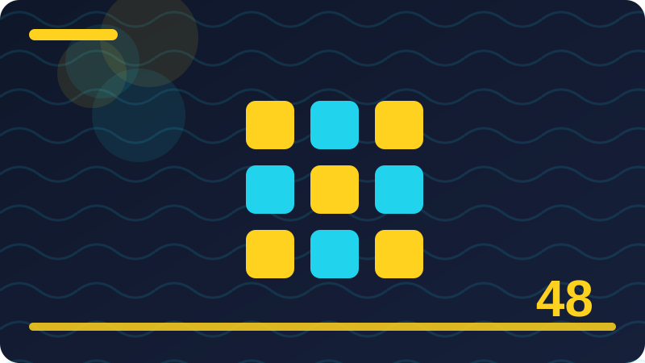

Chapter 48: Building a Real Application: Planning and Structure

Section 1: Meet SwiftDay, Your Capstone Project
This section looks closely at meet swiftday, your capstone project, one building block inside Building a Real Application: Planning and Structure. It is worth slowing down here, because meet swiftday, your capstone project turns up again in larger Swift programs, and a clear understanding now will save you confusion later. At its simplest, meet swiftday, your capstone project is about making your intention clear to the computer and to the next person who reads your code. Think of meet swiftday, your capstone project as a tool in a growing toolkit: you do not need to master every detail today, but you should know what it is for, when it helps, and what a sensible first example looks like in Swift. SwiftDay is a command-line task-and-notes manager in Swift using only the standard library, with main.swift and Task and Note structs, tasks and notes stored in a plain text file, and add, list, done and search commands, with no external libraries.
Keep your examples working, keep your notes short, and move on only when you can explain the main idea without looking back at the page. Revisit the section tomorrow with fresh eyes, and try to rebuild the example from memory before you check the original version. Start with the simplest case you can describe in one sentence, then add one complication at a time and check that each step still behaves as you expect. A clear name is worth more than a clever shortcut, because the next reader, who may be future you, needs to understand the intention without guessing. When you are stuck, make the problem smaller until you can see it clearly, then build the solution back up again one piece at a time. Error messages are clues, not judgements, and reading the first line carefully often points to the real problem before you change anything else. Try the example, break it gently on purpose, fix it again, and notice what you learned from each step of that small experiment.
struct Task {
let id: Int
let title: String
var isDone: Bool
}
let task = Task(id: 1, title: "Buy milk", isDone: false)
print(task.title)Combine this idea with earlier chapters, since a reliable program is built by joining small, well-tested pieces together in a sensible order. Think of a real person using the program, and ask whether this change genuinely helps that person or only makes the code look impressive. Do not rush past the example without running it, because silent reading leaves a fragile understanding that disappears under pressure. Keep a short note of mistakes you make and fixes that worked, because the same patterns will return in later projects in new disguises.
To consolidate this section, try a tiny variation of the example, change one value or one order, run the program again, and describe the difference in a sentence. If you cannot explain that difference, you have found a useful question to investigate, and investigating it now will pay off in the next section. Keep your example working, keep your notes short, and move on only when you can explain meet swiftday, your capstone project in your own words without looking back.
Check: What is the main idea behind meet swiftday, your capstone project in your own words?
Section 2: What SwiftDay Will and Will Not Do
This section looks closely at what swiftday will and will not do, one building block inside Building a Real Application: Planning and Structure. It is worth slowing down here, because what swiftday will and will not do turns up again in larger Swift programs, and a clear understanding now will save you confusion later. At its simplest, what swiftday will and will not do is about making your intention clear to the computer and to the next person who reads your code. Think of what swiftday will and will not do as a tool in a growing toolkit: you do not need to master every detail today, but you should know what it is for, when it helps, and what a sensible first example looks like in Swift. SwiftDay is a command-line task-and-notes manager in Swift using only the standard library, with main.swift and Task and Note structs, tasks and notes stored in a plain text file, and add, list, done and search commands, with no external libraries.
A clear name is worth more than a clever shortcut, because the next reader, who may be future you, needs to understand the intention without guessing. When you are stuck, make the problem smaller until you can see it clearly, then build the solution back up again one piece at a time. Error messages are clues, not judgements, and reading the first line carefully often points to the real problem before you change anything else. Try the example, break it gently on purpose, fix it again, and notice what you learned from each step of that small experiment. Combine this idea with earlier chapters, since a reliable program is built by joining small, well-tested pieces together in a sensible order. Think of a real person using the program, and ask whether this change genuinely helps that person or only makes the code look impressive. Do not rush past the example without running it, because silent reading leaves a fragile understanding that disappears under pressure.
struct Note {
let id: Int
let text: String
}
let note = Note(id: 1, text: "Milk is on offer today")
print(note.text)Keep a short note of mistakes you make and fixes that worked, because the same patterns will return in later projects in new disguises. Trace the code by hand for one small case, keeping track of each variable as its value changes step by step through the program. Order matters far more than it does in ordinary writing, and a small change in order can change the result in surprising ways. Ask three questions before you write code: what goes in, what comes out, and what could go wrong with unusual input.
To consolidate this section, try a tiny variation of the example, change one value or one order, run the program again, and describe the difference in a sentence. If you cannot explain that difference, you have found a useful question to investigate, and investigating it now will pay off in the next section. Keep your example working, keep your notes short, and move on only when you can explain what swiftday will and will not do in your own words without looking back.
Check: What is the main idea behind what swiftday will and will not do in your own words?
Section 3: The Commands SwiftDay Must Support
This section looks closely at the commands swiftday must support, one building block inside Building a Real Application: Planning and Structure. It is worth slowing down here, because the commands swiftday must support turns up again in larger Swift programs, and a clear understanding now will save you confusion later. At its simplest, the commands swiftday must support is about making your intention clear to the computer and to the next person who reads your code. Think of the commands swiftday must support as a tool in a growing toolkit: you do not need to master every detail today, but you should know what it is for, when it helps, and what a sensible first example looks like in Swift. SwiftDay is a command-line task-and-notes manager in Swift using only the standard library, with main.swift and Task and Note structs, tasks and notes stored in a plain text file, and add, list, done and search commands, with no external libraries.
Try the example, break it gently on purpose, fix it again, and notice what you learned from each step of that small experiment. Combine this idea with earlier chapters, since a reliable program is built by joining small, well-tested pieces together in a sensible order. Think of a real person using the program, and ask whether this change genuinely helps that person or only makes the code look impressive. Do not rush past the example without running it, because silent reading leaves a fragile understanding that disappears under pressure. Keep a short note of mistakes you make and fixes that worked, because the same patterns will return in later projects in new disguises. Trace the code by hand for one small case, keeping track of each variable as its value changes step by step through the program. Order matters far more than it does in ordinary writing, and a small change in order can change the result in surprising ways.
func addTask(_ tasks: inout [Task], title: String) {
let nextId = (tasks.map { $0.id }.max() ?? 0) + 1
tasks.append(Task(id: nextId, title: title, isDone: false))
}
var tasks: [Task] = []
addTask(&tasks, title: "Buy milk")
print(tasks.count)Ask three questions before you write code: what goes in, what comes out, and what could go wrong with unusual input. Empty input, very long input, and input in an unexpected order are all worth testing, even in a tiny program that seems too simple to fail. A program that works once has not yet been tested well enough to trust, so repeat the test with a second, different example before you move on. If you cannot explain the idea in your own words without looking back, you have found a useful question to investigate before the next section.
To consolidate this section, try a tiny variation of the example, change one value or one order, run the program again, and describe the difference in a sentence. If you cannot explain that difference, you have found a useful question to investigate, and investigating it now will pay off in the next section. Keep your example working, keep your notes short, and move on only when you can explain the commands swiftday must support in your own words without looking back.
Check: What is the main idea behind the commands swiftday must support in your own words?
Section 4: Add: Turning Words into a Task
This section looks closely at add: turning words into a task, one building block inside Building a Real Application: Planning and Structure. It is worth slowing down here, because add: turning words into a task turns up again in larger Swift programs, and a clear understanding now will save you confusion later. At its simplest, add: turning words into a task is about making your intention clear to the computer and to the next person who reads your code. Think of add: turning words into a task as a tool in a growing toolkit: you do not need to master every detail today, but you should know what it is for, when it helps, and what a sensible first example looks like in Swift. SwiftDay is a command-line task-and-notes manager in Swift using only the standard library, with main.swift and Task and Note structs, tasks and notes stored in a plain text file, and add, list, done and search commands, with no external libraries.
Do not rush past the example without running it, because silent reading leaves a fragile understanding that disappears under pressure. Keep a short note of mistakes you make and fixes that worked, because the same patterns will return in later projects in new disguises. Trace the code by hand for one small case, keeping track of each variable as its value changes step by step through the program. Order matters far more than it does in ordinary writing, and a small change in order can change the result in surprising ways. Ask three questions before you write code: what goes in, what comes out, and what could go wrong with unusual input. Empty input, very long input, and input in an unexpected order are all worth testing, even in a tiny program that seems too simple to fail. A program that works once has not yet been tested well enough to trust, so repeat the test with a second, different example before you move on.
func listTasks(_ tasks: [Task]) {
for task in tasks {
print("\(task.id). \(task.title)")
}
}If you cannot explain the idea in your own words without looking back, you have found a useful question to investigate before the next section. Good code explains itself through names and structure first, and uses comments to explain why a choice was made, not to repeat what the code already says. Change one thing at a time when you experiment, so that when the behaviour changes you know exactly which change caused it. Read the code aloud as a story, and listen for places where the story jumps, repeats itself, or leaves an important step unexplained.
To consolidate this section, try a tiny variation of the example, change one value or one order, run the program again, and describe the difference in a sentence. If you cannot explain that difference, you have found a useful question to investigate, and investigating it now will pay off in the next section. Keep your example working, keep your notes short, and move on only when you can explain add: turning words into a task in your own words without looking back.
Check: What is the main idea behind add: turning words into a task in your own words?
Section 5: List: Showing Tasks Clearly
This section looks closely at list: showing tasks clearly, one building block inside Building a Real Application: Planning and Structure. It is worth slowing down here, because list: showing tasks clearly turns up again in larger Swift programs, and a clear understanding now will save you confusion later. At its simplest, list: showing tasks clearly is about making your intention clear to the computer and to the next person who reads your code. Think of list: showing tasks clearly as a tool in a growing toolkit: you do not need to master every detail today, but you should know what it is for, when it helps, and what a sensible first example looks like in Swift. SwiftDay is a command-line task-and-notes manager in Swift using only the standard library, with main.swift and Task and Note structs, tasks and notes stored in a plain text file, and add, list, done and search commands, with no external libraries.
Order matters far more than it does in ordinary writing, and a small change in order can change the result in surprising ways. Ask three questions before you write code: what goes in, what comes out, and what could go wrong with unusual input. Empty input, very long input, and input in an unexpected order are all worth testing, even in a tiny program that seems too simple to fail. A program that works once has not yet been tested well enough to trust, so repeat the test with a second, different example before you move on. If you cannot explain the idea in your own words without looking back, you have found a useful question to investigate before the next section. Good code explains itself through names and structure first, and uses comments to explain why a choice was made, not to repeat what the code already says. Change one thing at a time when you experiment, so that when the behaviour changes you know exactly which change caused it.
func searchTasks(_ tasks: [Task], word: String) -> [Task] {
return tasks.filter { $0.title.lowercased().contains(word.lowercased()) }
}Read the code aloud as a story, and listen for places where the story jumps, repeats itself, or leaves an important step unexplained. Small, honest programs teach more than large, half-finished ones, because every part of a small program can be understood and tested. When a result surprises you, check your assumptions about the input first, because most surprises come from data you did not expect.
To consolidate this section, try a tiny variation of the example, change one value or one order, run the program again, and describe the difference in a sentence. If you cannot explain that difference, you have found a useful question to investigate, and investigating it now will pay off in the next section. Keep your example working, keep your notes short, and move on only when you can explain list: showing tasks clearly in your own words without looking back.
Check: What is the main idea behind list: showing tasks clearly in your own words?
Section 6: Done: Marking Work Finished
This section looks closely at done: marking work finished, one building block inside Building a Real Application: Planning and Structure. It is worth slowing down here, because done: marking work finished turns up again in larger Swift programs, and a clear understanding now will save you confusion later. At its simplest, done: marking work finished is about making your intention clear to the computer and to the next person who reads your code. Think of done: marking work finished as a tool in a growing toolkit: you do not need to master every detail today, but you should know what it is for, when it helps, and what a sensible first example looks like in Swift. SwiftDay is a command-line task-and-notes manager in Swift using only the standard library, with main.swift and Task and Note structs, tasks and notes stored in a plain text file, and add, list, done and search commands, with no external libraries.
A program that works once has not yet been tested well enough to trust, so repeat the test with a second, different example before you move on. If you cannot explain the idea in your own words without looking back, you have found a useful question to investigate before the next section. Good code explains itself through names and structure first, and uses comments to explain why a choice was made, not to repeat what the code already says. Change one thing at a time when you experiment, so that when the behaviour changes you know exactly which change caused it. Read the code aloud as a story, and listen for places where the story jumps, repeats itself, or leaves an important step unexplained. Small, honest programs teach more than large, half-finished ones, because every part of a small program can be understood and tested. When a result surprises you, check your assumptions about the input first, because most surprises come from data you did not expect.
func markDone(_ tasks: inout [Task], id: Int) {
if let index = tasks.firstIndex(where: { $0.id == id }) {
tasks[index].isDone = true
}
}Write the test in your head before you run the code: what do you expect to see, and what would prove that your expectation was wrong? Keep related code together and unrelated code apart, so that a change in one place does not quietly break something far away. Prefer a straightforward solution you can explain over a fancy solution you cannot defend when someone asks why it works. Document the decision, not just the result, because the reason you chose one approach over another is what a future reader needs most.
To consolidate this section, try a tiny variation of the example, change one value or one order, run the program again, and describe the difference in a sentence. If you cannot explain that difference, you have found a useful question to investigate, and investigating it now will pay off in the next section. Keep your example working, keep your notes short, and move on only when you can explain done: marking work finished in your own words without looking back.
Check: What is the main idea behind done: marking work finished in your own words?
Section 7: Search: Finding Tasks and Notes Fast
This section looks closely at search: finding tasks and notes fast, one building block inside Building a Real Application: Planning and Structure. It is worth slowing down here, because search: finding tasks and notes fast turns up again in larger Swift programs, and a clear understanding now will save you confusion later. At its simplest, search: finding tasks and notes fast is about making your intention clear to the computer and to the next person who reads your code. Think of search: finding tasks and notes fast as a tool in a growing toolkit: you do not need to master every detail today, but you should know what it is for, when it helps, and what a sensible first example looks like in Swift. SwiftDay is a command-line task-and-notes manager in Swift using only the standard library, with main.swift and Task and Note structs, tasks and notes stored in a plain text file, and add, list, done and search commands, with no external libraries.
Change one thing at a time when you experiment, so that when the behaviour changes you know exactly which change caused it. Read the code aloud as a story, and listen for places where the story jumps, repeats itself, or leaves an important step unexplained. Small, honest programs teach more than large, half-finished ones, because every part of a small program can be understood and tested. When a result surprises you, check your assumptions about the input first, because most surprises come from data you did not expect. Write the test in your head before you run the code: what do you expect to see, and what would prove that your expectation was wrong? Keep related code together and unrelated code apart, so that a change in one place does not quietly break something far away. Prefer a straightforward solution you can explain over a fancy solution you cannot defend when someone asks why it works.
struct Task {
let id: Int
let title: String
var isDone: Bool
}
let task = Task(id: 1, title: "Buy milk", isDone: false)
print(task.title)Document the decision, not just the result, because the reason you chose one approach over another is what a future reader needs most. Practice with tiny variations of the example, change one value or one order, run the program again, and describe the difference in a sentence. A habit of saving your work, testing often, and naming things clearly will carry you further than any single trick in this chapter.
To consolidate this section, try a tiny variation of the example, change one value or one order, run the program again, and describe the difference in a sentence. If you cannot explain that difference, you have found a useful question to investigate, and investigating it now will pay off in the next section. Keep your example working, keep your notes short, and move on only when you can explain search: finding tasks and notes fast in your own words without looking back.
Check: What is the main idea behind search: finding tasks and notes fast in your own words?
Section 8: Notes: Why SwiftDay Keeps Notes Too
This section looks closely at notes: why swiftday keeps notes too, one building block inside Building a Real Application: Planning and Structure. It is worth slowing down here, because notes: why swiftday keeps notes too turns up again in larger Swift programs, and a clear understanding now will save you confusion later. At its simplest, notes: why swiftday keeps notes too is about making your intention clear to the computer and to the next person who reads your code. Think of notes: why swiftday keeps notes too as a tool in a growing toolkit: you do not need to master every detail today, but you should know what it is for, when it helps, and what a sensible first example looks like in Swift. SwiftDay is a command-line task-and-notes manager in Swift using only the standard library, with main.swift and Task and Note structs, tasks and notes stored in a plain text file, and add, list, done and search commands, with no external libraries.
When a result surprises you, check your assumptions about the input first, because most surprises come from data you did not expect. Write the test in your head before you run the code: what do you expect to see, and what would prove that your expectation was wrong? Keep related code together and unrelated code apart, so that a change in one place does not quietly break something far away. Prefer a straightforward solution you can explain over a fancy solution you cannot defend when someone asks why it works. Document the decision, not just the result, because the reason you chose one approach over another is what a future reader needs most. Practice with tiny variations of the example, change one value or one order, run the program again, and describe the difference in a sentence. A habit of saving your work, testing often, and naming things clearly will carry you further than any single trick in this chapter.
struct Note {
let id: Int
let text: String
}
let note = Note(id: 1, text: "Milk is on offer today")
print(note.text)Look for the boundary of the idea: where does it help, where does it stop helping, and what would you use instead beyond that boundary? Compare two ways of solving the same small problem, and judge them by clarity, correctness, and how easy they are to change later. Do not copy an example blindly; adapt it to a problem you care about, because adapting forces you to understand every part you keep. Keep your examples working, keep your notes short, and move on only when you can explain the main idea without looking back at the page.
To consolidate this section, try a tiny variation of the example, change one value or one order, run the program again, and describe the difference in a sentence. If you cannot explain that difference, you have found a useful question to investigate, and investigating it now will pay off in the next section. Keep your example working, keep your notes short, and move on only when you can explain notes: why swiftday keeps notes too in your own words without looking back.
Check: What is the main idea behind notes: why swiftday keeps notes too in your own words?
Section 9: Choosing the Standard Library Only
This section looks closely at choosing the standard library only, one building block inside Building a Real Application: Planning and Structure. It is worth slowing down here, because choosing the standard library only turns up again in larger Swift programs, and a clear understanding now will save you confusion later. At its simplest, choosing the standard library only is about making your intention clear to the computer and to the next person who reads your code. Think of choosing the standard library only as a tool in a growing toolkit: you do not need to master every detail today, but you should know what it is for, when it helps, and what a sensible first example looks like in Swift. SwiftDay is a command-line task-and-notes manager in Swift using only the standard library, with main.swift and Task and Note structs, tasks and notes stored in a plain text file, and add, list, done and search commands, with no external libraries.
Prefer a straightforward solution you can explain over a fancy solution you cannot defend when someone asks why it works. Document the decision, not just the result, because the reason you chose one approach over another is what a future reader needs most. Practice with tiny variations of the example, change one value or one order, run the program again, and describe the difference in a sentence. A habit of saving your work, testing often, and naming things clearly will carry you further than any single trick in this chapter. Look for the boundary of the idea: where does it help, where does it stop helping, and what would you use instead beyond that boundary? Compare two ways of solving the same small problem, and judge them by clarity, correctness, and how easy they are to change later. Do not copy an example blindly; adapt it to a problem you care about, because adapting forces you to understand every part you keep.
func addTask(_ tasks: inout [Task], title: String) {
let nextId = (tasks.map { $0.id }.max() ?? 0) + 1
tasks.append(Task(id: nextId, title: title, isDone: false))
}
var tasks: [Task] = []
addTask(&tasks, title: "Buy milk")
print(tasks.count)Keep your examples working, keep your notes short, and move on only when you can explain the main idea without looking back at the page. Revisit the section tomorrow with fresh eyes, and try to rebuild the example from memory before you check the original version. Start with the simplest case you can describe in one sentence, then add one complication at a time and check that each step still behaves as you expect. A clear name is worth more than a clever shortcut, because the next reader, who may be future you, needs to understand the intention without guessing.
To consolidate this section, try a tiny variation of the example, change one value or one order, run the program again, and describe the difference in a sentence. If you cannot explain that difference, you have found a useful question to investigate, and investigating it now will pay off in the next section. Keep your example working, keep your notes short, and move on only when you can explain choosing the standard library only in your own words without looking back.
Check: What is the main idea behind choosing the standard library only in your own words?
Section 10: Why No External Libraries
This section looks closely at why no external libraries, one building block inside Building a Real Application: Planning and Structure. It is worth slowing down here, because why no external libraries turns up again in larger Swift programs, and a clear understanding now will save you confusion later. At its simplest, why no external libraries is about making your intention clear to the computer and to the next person who reads your code. Think of why no external libraries as a tool in a growing toolkit: you do not need to master every detail today, but you should know what it is for, when it helps, and what a sensible first example looks like in Swift. SwiftDay is a command-line task-and-notes manager in Swift using only the standard library, with main.swift and Task and Note structs, tasks and notes stored in a plain text file, and add, list, done and search commands, with no external libraries.
A habit of saving your work, testing often, and naming things clearly will carry you further than any single trick in this chapter. Look for the boundary of the idea: where does it help, where does it stop helping, and what would you use instead beyond that boundary? Compare two ways of solving the same small problem, and judge them by clarity, correctness, and how easy they are to change later. Do not copy an example blindly; adapt it to a problem you care about, because adapting forces you to understand every part you keep. Keep your examples working, keep your notes short, and move on only when you can explain the main idea without looking back at the page. Revisit the section tomorrow with fresh eyes, and try to rebuild the example from memory before you check the original version. Start with the simplest case you can describe in one sentence, then add one complication at a time and check that each step still behaves as you expect.
func listTasks(_ tasks: [Task]) {
for task in tasks {
print("\(task.id). \(task.title)")
}
}A clear name is worth more than a clever shortcut, because the next reader, who may be future you, needs to understand the intention without guessing. When you are stuck, make the problem smaller until you can see it clearly, then build the solution back up again one piece at a time. Error messages are clues, not judgements, and reading the first line carefully often points to the real problem before you change anything else. Try the example, break it gently on purpose, fix it again, and notice what you learned from each step of that small experiment.
To consolidate this section, try a tiny variation of the example, change one value or one order, run the program again, and describe the difference in a sentence. If you cannot explain that difference, you have found a useful question to investigate, and investigating it now will pay off in the next section. Keep your example working, keep your notes short, and move on only when you can explain why no external libraries in your own words without looking back.
Check: What is the main idea behind why no external libraries in your own words?
Section 11: Sketching SwiftDay on Paper First
This section looks closely at sketching swiftday on paper first, one building block inside Building a Real Application: Planning and Structure. It is worth slowing down here, because sketching swiftday on paper first turns up again in larger Swift programs, and a clear understanding now will save you confusion later. At its simplest, sketching swiftday on paper first is about making your intention clear to the computer and to the next person who reads your code. Think of sketching swiftday on paper first as a tool in a growing toolkit: you do not need to master every detail today, but you should know what it is for, when it helps, and what a sensible first example looks like in Swift. SwiftDay is a command-line task-and-notes manager in Swift using only the standard library, with main.swift and Task and Note structs, tasks and notes stored in a plain text file, and add, list, done and search commands, with no external libraries.
Do not copy an example blindly; adapt it to a problem you care about, because adapting forces you to understand every part you keep. Keep your examples working, keep your notes short, and move on only when you can explain the main idea without looking back at the page. Revisit the section tomorrow with fresh eyes, and try to rebuild the example from memory before you check the original version. Start with the simplest case you can describe in one sentence, then add one complication at a time and check that each step still behaves as you expect. A clear name is worth more than a clever shortcut, because the next reader, who may be future you, needs to understand the intention without guessing. When you are stuck, make the problem smaller until you can see it clearly, then build the solution back up again one piece at a time. Error messages are clues, not judgements, and reading the first line carefully often points to the real problem before you change anything else.
func searchTasks(_ tasks: [Task], word: String) -> [Task] {
return tasks.filter { $0.title.lowercased().contains(word.lowercased()) }
}Try the example, break it gently on purpose, fix it again, and notice what you learned from each step of that small experiment. Combine this idea with earlier chapters, since a reliable program is built by joining small, well-tested pieces together in a sensible order. Think of a real person using the program, and ask whether this change genuinely helps that person or only makes the code look impressive. Do not rush past the example without running it, because silent reading leaves a fragile understanding that disappears under pressure.
To consolidate this section, try a tiny variation of the example, change one value or one order, run the program again, and describe the difference in a sentence. If you cannot explain that difference, you have found a useful question to investigate, and investigating it now will pay off in the next section. Keep your example working, keep your notes short, and move on only when you can explain sketching swiftday on paper first in your own words without looking back.
Check: What is the main idea behind sketching swiftday on paper first in your own words?
Section 12: main.swift: The Front Door
This section looks closely at main.swift: the front door, one building block inside Building a Real Application: Planning and Structure. It is worth slowing down here, because main.swift: the front door turns up again in larger Swift programs, and a clear understanding now will save you confusion later. At its simplest, main.swift: the front door is about making your intention clear to the computer and to the next person who reads your code. Think of main.swift: the front door as a tool in a growing toolkit: you do not need to master every detail today, but you should know what it is for, when it helps, and what a sensible first example looks like in Swift. SwiftDay is a command-line task-and-notes manager in Swift using only the standard library, with main.swift and Task and Note structs, tasks and notes stored in a plain text file, and add, list, done and search commands, with no external libraries.
Start with the simplest case you can describe in one sentence, then add one complication at a time and check that each step still behaves as you expect. A clear name is worth more than a clever shortcut, because the next reader, who may be future you, needs to understand the intention without guessing. When you are stuck, make the problem smaller until you can see it clearly, then build the solution back up again one piece at a time. Error messages are clues, not judgements, and reading the first line carefully often points to the real problem before you change anything else. Try the example, break it gently on purpose, fix it again, and notice what you learned from each step of that small experiment. Combine this idea with earlier chapters, since a reliable program is built by joining small, well-tested pieces together in a sensible order. Think of a real person using the program, and ask whether this change genuinely helps that person or only makes the code look impressive.
func markDone(_ tasks: inout [Task], id: Int) {
if let index = tasks.firstIndex(where: { $0.id == id }) {
tasks[index].isDone = true
}
}Do not rush past the example without running it, because silent reading leaves a fragile understanding that disappears under pressure. Keep a short note of mistakes you make and fixes that worked, because the same patterns will return in later projects in new disguises. Trace the code by hand for one small case, keeping track of each variable as its value changes step by step through the program. Order matters far more than it does in ordinary writing, and a small change in order can change the result in surprising ways.
To consolidate this section, try a tiny variation of the example, change one value or one order, run the program again, and describe the difference in a sentence. If you cannot explain that difference, you have found a useful question to investigate, and investigating it now will pay off in the next section. Keep your example working, keep your notes short, and move on only when you can explain main.swift: the front door in your own words without looking back.
Check: What is the main idea behind main.swift: the front door in your own words?
Section 13: The Task Struct in Plain Words
This section looks closely at the task struct in plain words, one building block inside Building a Real Application: Planning and Structure. It is worth slowing down here, because the task struct in plain words turns up again in larger Swift programs, and a clear understanding now will save you confusion later. At its simplest, the task struct in plain words is about making your intention clear to the computer and to the next person who reads your code. Think of the task struct in plain words as a tool in a growing toolkit: you do not need to master every detail today, but you should know what it is for, when it helps, and what a sensible first example looks like in Swift. SwiftDay is a command-line task-and-notes manager in Swift using only the standard library, with main.swift and Task and Note structs, tasks and notes stored in a plain text file, and add, list, done and search commands, with no external libraries.
Error messages are clues, not judgements, and reading the first line carefully often points to the real problem before you change anything else. Try the example, break it gently on purpose, fix it again, and notice what you learned from each step of that small experiment. Combine this idea with earlier chapters, since a reliable program is built by joining small, well-tested pieces together in a sensible order. Think of a real person using the program, and ask whether this change genuinely helps that person or only makes the code look impressive. Do not rush past the example without running it, because silent reading leaves a fragile understanding that disappears under pressure. Keep a short note of mistakes you make and fixes that worked, because the same patterns will return in later projects in new disguises. Trace the code by hand for one small case, keeping track of each variable as its value changes step by step through the program.
struct Task {
let id: Int
let title: String
var isDone: Bool
}
let task = Task(id: 1, title: "Buy milk", isDone: false)
print(task.title)Order matters far more than it does in ordinary writing, and a small change in order can change the result in surprising ways. Ask three questions before you write code: what goes in, what comes out, and what could go wrong with unusual input. Empty input, very long input, and input in an unexpected order are all worth testing, even in a tiny program that seems too simple to fail. A program that works once has not yet been tested well enough to trust, so repeat the test with a second, different example before you move on.
To consolidate this section, try a tiny variation of the example, change one value or one order, run the program again, and describe the difference in a sentence. If you cannot explain that difference, you have found a useful question to investigate, and investigating it now will pay off in the next section. Keep your example working, keep your notes short, and move on only when you can explain the task struct in plain words in your own words without looking back.
Check: What is the main idea behind the task struct in plain words in your own words?
Section 14: The Note Struct in Plain Words
This section looks closely at the note struct in plain words, one building block inside Building a Real Application: Planning and Structure. It is worth slowing down here, because the note struct in plain words turns up again in larger Swift programs, and a clear understanding now will save you confusion later. At its simplest, the note struct in plain words is about making your intention clear to the computer and to the next person who reads your code. Think of the note struct in plain words as a tool in a growing toolkit: you do not need to master every detail today, but you should know what it is for, when it helps, and what a sensible first example looks like in Swift. SwiftDay is a command-line task-and-notes manager in Swift using only the standard library, with main.swift and Task and Note structs, tasks and notes stored in a plain text file, and add, list, done and search commands, with no external libraries.
Think of a real person using the program, and ask whether this change genuinely helps that person or only makes the code look impressive. Do not rush past the example without running it, because silent reading leaves a fragile understanding that disappears under pressure. Keep a short note of mistakes you make and fixes that worked, because the same patterns will return in later projects in new disguises. Trace the code by hand for one small case, keeping track of each variable as its value changes step by step through the program. Order matters far more than it does in ordinary writing, and a small change in order can change the result in surprising ways. Ask three questions before you write code: what goes in, what comes out, and what could go wrong with unusual input. Empty input, very long input, and input in an unexpected order are all worth testing, even in a tiny program that seems too simple to fail.
struct Note {
let id: Int
let text: String
}
let note = Note(id: 1, text: "Milk is on offer today")
print(note.text)A program that works once has not yet been tested well enough to trust, so repeat the test with a second, different example before you move on. If you cannot explain the idea in your own words without looking back, you have found a useful question to investigate before the next section. Good code explains itself through names and structure first, and uses comments to explain why a choice was made, not to repeat what the code already says. Change one thing at a time when you experiment, so that when the behaviour changes you know exactly which change caused it.
To consolidate this section, try a tiny variation of the example, change one value or one order, run the program again, and describe the difference in a sentence. If you cannot explain that difference, you have found a useful question to investigate, and investigating it now will pay off in the next section. Keep your example working, keep your notes short, and move on only when you can explain the note struct in plain words in your own words without looking back.
Check: What is the main idea behind the note struct in plain words in your own words?
Section 15: Fields Every Task Needs
This section looks closely at fields every task needs, one building block inside Building a Real Application: Planning and Structure. It is worth slowing down here, because fields every task needs turns up again in larger Swift programs, and a clear understanding now will save you confusion later. At its simplest, fields every task needs is about making your intention clear to the computer and to the next person who reads your code. Think of fields every task needs as a tool in a growing toolkit: you do not need to master every detail today, but you should know what it is for, when it helps, and what a sensible first example looks like in Swift. SwiftDay is a command-line task-and-notes manager in Swift using only the standard library, with main.swift and Task and Note structs, tasks and notes stored in a plain text file, and add, list, done and search commands, with no external libraries.
Trace the code by hand for one small case, keeping track of each variable as its value changes step by step through the program. Order matters far more than it does in ordinary writing, and a small change in order can change the result in surprising ways. Ask three questions before you write code: what goes in, what comes out, and what could go wrong with unusual input. Empty input, very long input, and input in an unexpected order are all worth testing, even in a tiny program that seems too simple to fail. A program that works once has not yet been tested well enough to trust, so repeat the test with a second, different example before you move on. If you cannot explain the idea in your own words without looking back, you have found a useful question to investigate before the next section. Good code explains itself through names and structure first, and uses comments to explain why a choice was made, not to repeat what the code already says.
func addTask(_ tasks: inout [Task], title: String) {
let nextId = (tasks.map { $0.id }.max() ?? 0) + 1
tasks.append(Task(id: nextId, title: title, isDone: false))
}
var tasks: [Task] = []
addTask(&tasks, title: "Buy milk")
print(tasks.count)Change one thing at a time when you experiment, so that when the behaviour changes you know exactly which change caused it. Read the code aloud as a story, and listen for places where the story jumps, repeats itself, or leaves an important step unexplained. Small, honest programs teach more than large, half-finished ones, because every part of a small program can be understood and tested. When a result surprises you, check your assumptions about the input first, because most surprises come from data you did not expect.
To consolidate this section, try a tiny variation of the example, change one value or one order, run the program again, and describe the difference in a sentence. If you cannot explain that difference, you have found a useful question to investigate, and investigating it now will pay off in the next section. Keep your example working, keep your notes short, and move on only when you can explain fields every task needs in your own words without looking back.
Check: What is the main idea behind fields every task needs in your own words?
Section 16: Fields Every Note Needs
This section looks closely at fields every note needs, one building block inside Building a Real Application: Planning and Structure. It is worth slowing down here, because fields every note needs turns up again in larger Swift programs, and a clear understanding now will save you confusion later. At its simplest, fields every note needs is about making your intention clear to the computer and to the next person who reads your code. Think of fields every note needs as a tool in a growing toolkit: you do not need to master every detail today, but you should know what it is for, when it helps, and what a sensible first example looks like in Swift. SwiftDay is a command-line task-and-notes manager in Swift using only the standard library, with main.swift and Task and Note structs, tasks and notes stored in a plain text file, and add, list, done and search commands, with no external libraries.
Empty input, very long input, and input in an unexpected order are all worth testing, even in a tiny program that seems too simple to fail. A program that works once has not yet been tested well enough to trust, so repeat the test with a second, different example before you move on. If you cannot explain the idea in your own words without looking back, you have found a useful question to investigate before the next section. Good code explains itself through names and structure first, and uses comments to explain why a choice was made, not to repeat what the code already says. Change one thing at a time when you experiment, so that when the behaviour changes you know exactly which change caused it. Read the code aloud as a story, and listen for places where the story jumps, repeats itself, or leaves an important step unexplained. Small, honest programs teach more than large, half-finished ones, because every part of a small program can be understood and tested.
func listTasks(_ tasks: [Task]) {
for task in tasks {
print("\(task.id). \(task.title)")
}
}When a result surprises you, check your assumptions about the input first, because most surprises come from data you did not expect. Write the test in your head before you run the code: what do you expect to see, and what would prove that your expectation was wrong? Keep related code together and unrelated code apart, so that a change in one place does not quietly break something far away. Prefer a straightforward solution you can explain over a fancy solution you cannot defend when someone asks why it works.
To consolidate this section, try a tiny variation of the example, change one value or one order, run the program again, and describe the difference in a sentence. If you cannot explain that difference, you have found a useful question to investigate, and investigating it now will pay off in the next section. Keep your example working, keep your notes short, and move on only when you can explain fields every note needs in your own words without looking back.
Check: What is the main idea behind fields every note needs in your own words?
Section 17: Storing Data in a Plain Text File
This section looks closely at storing data in a plain text file, one building block inside Building a Real Application: Planning and Structure. It is worth slowing down here, because storing data in a plain text file turns up again in larger Swift programs, and a clear understanding now will save you confusion later. At its simplest, storing data in a plain text file is about making your intention clear to the computer and to the next person who reads your code. Think of storing data in a plain text file as a tool in a growing toolkit: you do not need to master every detail today, but you should know what it is for, when it helps, and what a sensible first example looks like in Swift. SwiftDay is a command-line task-and-notes manager in Swift using only the standard library, with main.swift and Task and Note structs, tasks and notes stored in a plain text file, and add, list, done and search commands, with no external libraries.
Good code explains itself through names and structure first, and uses comments to explain why a choice was made, not to repeat what the code already says. Change one thing at a time when you experiment, so that when the behaviour changes you know exactly which change caused it. Read the code aloud as a story, and listen for places where the story jumps, repeats itself, or leaves an important step unexplained. Small, honest programs teach more than large, half-finished ones, because every part of a small program can be understood and tested. When a result surprises you, check your assumptions about the input first, because most surprises come from data you did not expect. Write the test in your head before you run the code: what do you expect to see, and what would prove that your expectation was wrong? Keep related code together and unrelated code apart, so that a change in one place does not quietly break something far away.
func searchTasks(_ tasks: [Task], word: String) -> [Task] {
return tasks.filter { $0.title.lowercased().contains(word.lowercased()) }
}Prefer a straightforward solution you can explain over a fancy solution you cannot defend when someone asks why it works. Document the decision, not just the result, because the reason you chose one approach over another is what a future reader needs most. Practice with tiny variations of the example, change one value or one order, run the program again, and describe the difference in a sentence. A habit of saving your work, testing often, and naming things clearly will carry you further than any single trick in this chapter.
To consolidate this section, try a tiny variation of the example, change one value or one order, run the program again, and describe the difference in a sentence. If you cannot explain that difference, you have found a useful question to investigate, and investigating it now will pay off in the next section. Keep your example working, keep your notes short, and move on only when you can explain storing data in a plain text file in your own words without looking back.
Check: What is the main idea behind storing data in a plain text file in your own words?
Section 18: A Simple Line Format for Tasks
This section looks closely at a simple line format for tasks, one building block inside Building a Real Application: Planning and Structure. It is worth slowing down here, because a simple line format for tasks turns up again in larger Swift programs, and a clear understanding now will save you confusion later. At its simplest, a simple line format for tasks is about making your intention clear to the computer and to the next person who reads your code. Think of a simple line format for tasks as a tool in a growing toolkit: you do not need to master every detail today, but you should know what it is for, when it helps, and what a sensible first example looks like in Swift. SwiftDay is a command-line task-and-notes manager in Swift using only the standard library, with main.swift and Task and Note structs, tasks and notes stored in a plain text file, and add, list, done and search commands, with no external libraries.
Small, honest programs teach more than large, half-finished ones, because every part of a small program can be understood and tested. When a result surprises you, check your assumptions about the input first, because most surprises come from data you did not expect. Write the test in your head before you run the code: what do you expect to see, and what would prove that your expectation was wrong? Keep related code together and unrelated code apart, so that a change in one place does not quietly break something far away. Prefer a straightforward solution you can explain over a fancy solution you cannot defend when someone asks why it works. Document the decision, not just the result, because the reason you chose one approach over another is what a future reader needs most. Practice with tiny variations of the example, change one value or one order, run the program again, and describe the difference in a sentence.
func markDone(_ tasks: inout [Task], id: Int) {
if let index = tasks.firstIndex(where: { $0.id == id }) {
tasks[index].isDone = true
}
}A habit of saving your work, testing often, and naming things clearly will carry you further than any single trick in this chapter. Look for the boundary of the idea: where does it help, where does it stop helping, and what would you use instead beyond that boundary? Compare two ways of solving the same small problem, and judge them by clarity, correctness, and how easy they are to change later. Do not copy an example blindly; adapt it to a problem you care about, because adapting forces you to understand every part you keep.
To consolidate this section, try a tiny variation of the example, change one value or one order, run the program again, and describe the difference in a sentence. If you cannot explain that difference, you have found a useful question to investigate, and investigating it now will pay off in the next section. Keep your example working, keep your notes short, and move on only when you can explain a simple line format for tasks in your own words without looking back.
Check: What is the main idea behind a simple line format for tasks in your own words?
Section 19: A Simple Line Format for Notes
This section looks closely at a simple line format for notes, one building block inside Building a Real Application: Planning and Structure. It is worth slowing down here, because a simple line format for notes turns up again in larger Swift programs, and a clear understanding now will save you confusion later. At its simplest, a simple line format for notes is about making your intention clear to the computer and to the next person who reads your code. Think of a simple line format for notes as a tool in a growing toolkit: you do not need to master every detail today, but you should know what it is for, when it helps, and what a sensible first example looks like in Swift. SwiftDay is a command-line task-and-notes manager in Swift using only the standard library, with main.swift and Task and Note structs, tasks and notes stored in a plain text file, and add, list, done and search commands, with no external libraries.
Keep related code together and unrelated code apart, so that a change in one place does not quietly break something far away. Prefer a straightforward solution you can explain over a fancy solution you cannot defend when someone asks why it works. Document the decision, not just the result, because the reason you chose one approach over another is what a future reader needs most. Practice with tiny variations of the example, change one value or one order, run the program again, and describe the difference in a sentence. A habit of saving your work, testing often, and naming things clearly will carry you further than any single trick in this chapter. Look for the boundary of the idea: where does it help, where does it stop helping, and what would you use instead beyond that boundary? Compare two ways of solving the same small problem, and judge them by clarity, correctness, and how easy they are to change later.
struct Task {
let id: Int
let title: String
var isDone: Bool
}
let task = Task(id: 1, title: "Buy milk", isDone: false)
print(task.title)Do not copy an example blindly; adapt it to a problem you care about, because adapting forces you to understand every part you keep. Keep your examples working, keep your notes short, and move on only when you can explain the main idea without looking back at the page. Revisit the section tomorrow with fresh eyes, and try to rebuild the example from memory before you check the original version. Start with the simplest case you can describe in one sentence, then add one complication at a time and check that each step still behaves as you expect.
To consolidate this section, try a tiny variation of the example, change one value or one order, run the program again, and describe the difference in a sentence. If you cannot explain that difference, you have found a useful question to investigate, and investigating it now will pay off in the next section. Keep your example working, keep your notes short, and move on only when you can explain a simple line format for notes in your own words without looking back.
Check: What is the main idea behind a simple line format for notes in your own words?
Section 20: Reading the File Back Safely
This section looks closely at reading the file back safely, one building block inside Building a Real Application: Planning and Structure. It is worth slowing down here, because reading the file back safely turns up again in larger Swift programs, and a clear understanding now will save you confusion later. At its simplest, reading the file back safely is about making your intention clear to the computer and to the next person who reads your code. Think of reading the file back safely as a tool in a growing toolkit: you do not need to master every detail today, but you should know what it is for, when it helps, and what a sensible first example looks like in Swift. SwiftDay is a command-line task-and-notes manager in Swift using only the standard library, with main.swift and Task and Note structs, tasks and notes stored in a plain text file, and add, list, done and search commands, with no external libraries.
Practice with tiny variations of the example, change one value or one order, run the program again, and describe the difference in a sentence. A habit of saving your work, testing often, and naming things clearly will carry you further than any single trick in this chapter. Look for the boundary of the idea: where does it help, where does it stop helping, and what would you use instead beyond that boundary? Compare two ways of solving the same small problem, and judge them by clarity, correctness, and how easy they are to change later. Do not copy an example blindly; adapt it to a problem you care about, because adapting forces you to understand every part you keep. Keep your examples working, keep your notes short, and move on only when you can explain the main idea without looking back at the page. Revisit the section tomorrow with fresh eyes, and try to rebuild the example from memory before you check the original version.
struct Note {
let id: Int
let text: String
}
let note = Note(id: 1, text: "Milk is on offer today")
print(note.text)Start with the simplest case you can describe in one sentence, then add one complication at a time and check that each step still behaves as you expect. A clear name is worth more than a clever shortcut, because the next reader, who may be future you, needs to understand the intention without guessing. When you are stuck, make the problem smaller until you can see it clearly, then build the solution back up again one piece at a time. Error messages are clues, not judgements, and reading the first line carefully often points to the real problem before you change anything else.
To consolidate this section, try a tiny variation of the example, change one value or one order, run the program again, and describe the difference in a sentence. If you cannot explain that difference, you have found a useful question to investigate, and investigating it now will pay off in the next section. Keep your example working, keep your notes short, and move on only when you can explain reading the file back safely in your own words without looking back.
Check: What is the main idea behind reading the file back safely in your own words?
Section 21: Writing the File Without Losing Data
This section looks closely at writing the file without losing data, one building block inside Building a Real Application: Planning and Structure. It is worth slowing down here, because writing the file without losing data turns up again in larger Swift programs, and a clear understanding now will save you confusion later. At its simplest, writing the file without losing data is about making your intention clear to the computer and to the next person who reads your code. Think of writing the file without losing data as a tool in a growing toolkit: you do not need to master every detail today, but you should know what it is for, when it helps, and what a sensible first example looks like in Swift. SwiftDay is a command-line task-and-notes manager in Swift using only the standard library, with main.swift and Task and Note structs, tasks and notes stored in a plain text file, and add, list, done and search commands, with no external libraries.
Compare two ways of solving the same small problem, and judge them by clarity, correctness, and how easy they are to change later. Do not copy an example blindly; adapt it to a problem you care about, because adapting forces you to understand every part you keep. Keep your examples working, keep your notes short, and move on only when you can explain the main idea without looking back at the page. Revisit the section tomorrow with fresh eyes, and try to rebuild the example from memory before you check the original version. Start with the simplest case you can describe in one sentence, then add one complication at a time and check that each step still behaves as you expect. A clear name is worth more than a clever shortcut, because the next reader, who may be future you, needs to understand the intention without guessing. When you are stuck, make the problem smaller until you can see it clearly, then build the solution back up again one piece at a time.
func addTask(_ tasks: inout [Task], title: String) {
let nextId = (tasks.map { $0.id }.max() ?? 0) + 1
tasks.append(Task(id: nextId, title: title, isDone: false))
}
var tasks: [Task] = []
addTask(&tasks, title: "Buy milk")
print(tasks.count)Error messages are clues, not judgements, and reading the first line carefully often points to the real problem before you change anything else. Try the example, break it gently on purpose, fix it again, and notice what you learned from each step of that small experiment. Combine this idea with earlier chapters, since a reliable program is built by joining small, well-tested pieces together in a sensible order. Think of a real person using the program, and ask whether this change genuinely helps that person or only makes the code look impressive.
To consolidate this section, try a tiny variation of the example, change one value or one order, run the program again, and describe the difference in a sentence. If you cannot explain that difference, you have found a useful question to investigate, and investigating it now will pay off in the next section. Keep your example working, keep your notes short, and move on only when you can explain writing the file without losing data in your own words without looking back.
Check: What is the main idea behind writing the file without losing data in your own words?
Section 22: Handling a Missing File Gracefully
This section looks closely at handling a missing file gracefully, one building block inside Building a Real Application: Planning and Structure. It is worth slowing down here, because handling a missing file gracefully turns up again in larger Swift programs, and a clear understanding now will save you confusion later. At its simplest, handling a missing file gracefully is about making your intention clear to the computer and to the next person who reads your code. Think of handling a missing file gracefully as a tool in a growing toolkit: you do not need to master every detail today, but you should know what it is for, when it helps, and what a sensible first example looks like in Swift. SwiftDay is a command-line task-and-notes manager in Swift using only the standard library, with main.swift and Task and Note structs, tasks and notes stored in a plain text file, and add, list, done and search commands, with no external libraries.
Revisit the section tomorrow with fresh eyes, and try to rebuild the example from memory before you check the original version. Start with the simplest case you can describe in one sentence, then add one complication at a time and check that each step still behaves as you expect. A clear name is worth more than a clever shortcut, because the next reader, who may be future you, needs to understand the intention without guessing. When you are stuck, make the problem smaller until you can see it clearly, then build the solution back up again one piece at a time. Error messages are clues, not judgements, and reading the first line carefully often points to the real problem before you change anything else. Try the example, break it gently on purpose, fix it again, and notice what you learned from each step of that small experiment. Combine this idea with earlier chapters, since a reliable program is built by joining small, well-tested pieces together in a sensible order.
func listTasks(_ tasks: [Task]) {
for task in tasks {
print("\(task.id). \(task.title)")
}
}Think of a real person using the program, and ask whether this change genuinely helps that person or only makes the code look impressive. Do not rush past the example without running it, because silent reading leaves a fragile understanding that disappears under pressure. Keep a short note of mistakes you make and fixes that worked, because the same patterns will return in later projects in new disguises. Trace the code by hand for one small case, keeping track of each variable as its value changes step by step through the program.
To consolidate this section, try a tiny variation of the example, change one value or one order, run the program again, and describe the difference in a sentence. If you cannot explain that difference, you have found a useful question to investigate, and investigating it now will pay off in the next section. Keep your example working, keep your notes short, and move on only when you can explain handling a missing file gracefully in your own words without looking back.
Check: What is the main idea behind handling a missing file gracefully in your own words?
Section 23: Handling a Damaged Line Gracefully
This section looks closely at handling a damaged line gracefully, one building block inside Building a Real Application: Planning and Structure. It is worth slowing down here, because handling a damaged line gracefully turns up again in larger Swift programs, and a clear understanding now will save you confusion later. At its simplest, handling a damaged line gracefully is about making your intention clear to the computer and to the next person who reads your code. Think of handling a damaged line gracefully as a tool in a growing toolkit: you do not need to master every detail today, but you should know what it is for, when it helps, and what a sensible first example looks like in Swift. SwiftDay is a command-line task-and-notes manager in Swift using only the standard library, with main.swift and Task and Note structs, tasks and notes stored in a plain text file, and add, list, done and search commands, with no external libraries.
When you are stuck, make the problem smaller until you can see it clearly, then build the solution back up again one piece at a time. Error messages are clues, not judgements, and reading the first line carefully often points to the real problem before you change anything else. Try the example, break it gently on purpose, fix it again, and notice what you learned from each step of that small experiment. Combine this idea with earlier chapters, since a reliable program is built by joining small, well-tested pieces together in a sensible order. Think of a real person using the program, and ask whether this change genuinely helps that person or only makes the code look impressive. Do not rush past the example without running it, because silent reading leaves a fragile understanding that disappears under pressure. Keep a short note of mistakes you make and fixes that worked, because the same patterns will return in later projects in new disguises.
func searchTasks(_ tasks: [Task], word: String) -> [Task] {
return tasks.filter { $0.title.lowercased().contains(word.lowercased()) }
}Trace the code by hand for one small case, keeping track of each variable as its value changes step by step through the program. Order matters far more than it does in ordinary writing, and a small change in order can change the result in surprising ways. Ask three questions before you write code: what goes in, what comes out, and what could go wrong with unusual input. Empty input, very long input, and input in an unexpected order are all worth testing, even in a tiny program that seems too simple to fail.
To consolidate this section, try a tiny variation of the example, change one value or one order, run the program again, and describe the difference in a sentence. If you cannot explain that difference, you have found a useful question to investigate, and investigating it now will pay off in the next section. Keep your example working, keep your notes short, and move on only when you can explain handling a damaged line gracefully in your own words without looking back.
Check: What is the main idea behind handling a damaged line gracefully in your own words?
Section 24: Command-Line Arguments in Plain Words
This section looks closely at command-line arguments in plain words, one building block inside Building a Real Application: Planning and Structure. It is worth slowing down here, because command-line arguments in plain words turns up again in larger Swift programs, and a clear understanding now will save you confusion later. At its simplest, command-line arguments in plain words is about making your intention clear to the computer and to the next person who reads your code. Think of command-line arguments in plain words as a tool in a growing toolkit: you do not need to master every detail today, but you should know what it is for, when it helps, and what a sensible first example looks like in Swift. SwiftDay is a command-line task-and-notes manager in Swift using only the standard library, with main.swift and Task and Note structs, tasks and notes stored in a plain text file, and add, list, done and search commands, with no external libraries.
Combine this idea with earlier chapters, since a reliable program is built by joining small, well-tested pieces together in a sensible order. Think of a real person using the program, and ask whether this change genuinely helps that person or only makes the code look impressive. Do not rush past the example without running it, because silent reading leaves a fragile understanding that disappears under pressure. Keep a short note of mistakes you make and fixes that worked, because the same patterns will return in later projects in new disguises. Trace the code by hand for one small case, keeping track of each variable as its value changes step by step through the program. Order matters far more than it does in ordinary writing, and a small change in order can change the result in surprising ways. Ask three questions before you write code: what goes in, what comes out, and what could go wrong with unusual input.
func markDone(_ tasks: inout [Task], id: Int) {
if let index = tasks.firstIndex(where: { $0.id == id }) {
tasks[index].isDone = true
}
}Empty input, very long input, and input in an unexpected order are all worth testing, even in a tiny program that seems too simple to fail. A program that works once has not yet been tested well enough to trust, so repeat the test with a second, different example before you move on. If you cannot explain the idea in your own words without looking back, you have found a useful question to investigate before the next section. Good code explains itself through names and structure first, and uses comments to explain why a choice was made, not to repeat what the code already says.
To consolidate this section, try a tiny variation of the example, change one value or one order, run the program again, and describe the difference in a sentence. If you cannot explain that difference, you have found a useful question to investigate, and investigating it now will pay off in the next section. Keep your example working, keep your notes short, and move on only when you can explain command-line arguments in plain words in your own words without looking back.
Check: What is the main idea behind command-line arguments in plain words in your own words?
Section 25: Parsing Add Arguments
This section looks closely at parsing add arguments, one building block inside Building a Real Application: Planning and Structure. It is worth slowing down here, because parsing add arguments turns up again in larger Swift programs, and a clear understanding now will save you confusion later. At its simplest, parsing add arguments is about making your intention clear to the computer and to the next person who reads your code. Think of parsing add arguments as a tool in a growing toolkit: you do not need to master every detail today, but you should know what it is for, when it helps, and what a sensible first example looks like in Swift. SwiftDay is a command-line task-and-notes manager in Swift using only the standard library, with main.swift and Task and Note structs, tasks and notes stored in a plain text file, and add, list, done and search commands, with no external libraries.
Keep a short note of mistakes you make and fixes that worked, because the same patterns will return in later projects in new disguises. Trace the code by hand for one small case, keeping track of each variable as its value changes step by step through the program. Order matters far more than it does in ordinary writing, and a small change in order can change the result in surprising ways. Ask three questions before you write code: what goes in, what comes out, and what could go wrong with unusual input. Empty input, very long input, and input in an unexpected order are all worth testing, even in a tiny program that seems too simple to fail. A program that works once has not yet been tested well enough to trust, so repeat the test with a second, different example before you move on. If you cannot explain the idea in your own words without looking back, you have found a useful question to investigate before the next section.
struct Task {
let id: Int
let title: String
var isDone: Bool
}
let task = Task(id: 1, title: "Buy milk", isDone: false)
print(task.title)Good code explains itself through names and structure first, and uses comments to explain why a choice was made, not to repeat what the code already says. Change one thing at a time when you experiment, so that when the behaviour changes you know exactly which change caused it. Read the code aloud as a story, and listen for places where the story jumps, repeats itself, or leaves an important step unexplained. Small, honest programs teach more than large, half-finished ones, because every part of a small program can be understood and tested.
To consolidate this section, try a tiny variation of the example, change one value or one order, run the program again, and describe the difference in a sentence. If you cannot explain that difference, you have found a useful question to investigate, and investigating it now will pay off in the next section. Keep your example working, keep your notes short, and move on only when you can explain parsing add arguments in your own words without looking back.
Check: What is the main idea behind parsing add arguments in your own words?
Section 26: Parsing List Arguments
This section looks closely at parsing list arguments, one building block inside Building a Real Application: Planning and Structure. It is worth slowing down here, because parsing list arguments turns up again in larger Swift programs, and a clear understanding now will save you confusion later. At its simplest, parsing list arguments is about making your intention clear to the computer and to the next person who reads your code. Think of parsing list arguments as a tool in a growing toolkit: you do not need to master every detail today, but you should know what it is for, when it helps, and what a sensible first example looks like in Swift. SwiftDay is a command-line task-and-notes manager in Swift using only the standard library, with main.swift and Task and Note structs, tasks and notes stored in a plain text file, and add, list, done and search commands, with no external libraries.
Ask three questions before you write code: what goes in, what comes out, and what could go wrong with unusual input. Empty input, very long input, and input in an unexpected order are all worth testing, even in a tiny program that seems too simple to fail. A program that works once has not yet been tested well enough to trust, so repeat the test with a second, different example before you move on. If you cannot explain the idea in your own words without looking back, you have found a useful question to investigate before the next section. Good code explains itself through names and structure first, and uses comments to explain why a choice was made, not to repeat what the code already says. Change one thing at a time when you experiment, so that when the behaviour changes you know exactly which change caused it. Read the code aloud as a story, and listen for places where the story jumps, repeats itself, or leaves an important step unexplained.
struct Note {
let id: Int
let text: String
}
let note = Note(id: 1, text: "Milk is on offer today")
print(note.text)Small, honest programs teach more than large, half-finished ones, because every part of a small program can be understood and tested. When a result surprises you, check your assumptions about the input first, because most surprises come from data you did not expect. Write the test in your head before you run the code: what do you expect to see, and what would prove that your expectation was wrong? Keep related code together and unrelated code apart, so that a change in one place does not quietly break something far away. Prefer a straightforward solution you can explain over a fancy solution you cannot defend when someone asks why it works.
To consolidate this section, try a tiny variation of the example, change one value or one order, run the program again, and describe the difference in a sentence. If you cannot explain that difference, you have found a useful question to investigate, and investigating it now will pay off in the next section. Keep your example working, keep your notes short, and move on only when you can explain parsing list arguments in your own words without looking back.
Check: What is the main idea behind parsing list arguments in your own words?
Section 27: Parsing Done Arguments
This section looks closely at parsing done arguments, one building block inside Building a Real Application: Planning and Structure. It is worth slowing down here, because parsing done arguments turns up again in larger Swift programs, and a clear understanding now will save you confusion later. At its simplest, parsing done arguments is about making your intention clear to the computer and to the next person who reads your code. Think of parsing done arguments as a tool in a growing toolkit: you do not need to master every detail today, but you should know what it is for, when it helps, and what a sensible first example looks like in Swift. SwiftDay is a command-line task-and-notes manager in Swift using only the standard library, with main.swift and Task and Note structs, tasks and notes stored in a plain text file, and add, list, done and search commands, with no external libraries.
If you cannot explain the idea in your own words without looking back, you have found a useful question to investigate before the next section. Good code explains itself through names and structure first, and uses comments to explain why a choice was made, not to repeat what the code already says. Change one thing at a time when you experiment, so that when the behaviour changes you know exactly which change caused it. Read the code aloud as a story, and listen for places where the story jumps, repeats itself, or leaves an important step unexplained. Small, honest programs teach more than large, half-finished ones, because every part of a small program can be understood and tested. When a result surprises you, check your assumptions about the input first, because most surprises come from data you did not expect. Write the test in your head before you run the code: what do you expect to see, and what would prove that your expectation was wrong?
func addTask(_ tasks: inout [Task], title: String) {
let nextId = (tasks.map { $0.id }.max() ?? 0) + 1
tasks.append(Task(id: nextId, title: title, isDone: false))
}
var tasks: [Task] = []
addTask(&tasks, title: "Buy milk")
print(tasks.count)Keep related code together and unrelated code apart, so that a change in one place does not quietly break something far away. Prefer a straightforward solution you can explain over a fancy solution you cannot defend when someone asks why it works. Document the decision, not just the result, because the reason you chose one approach over another is what a future reader needs most. Practice with tiny variations of the example, change one value or one order, run the program again, and describe the difference in a sentence. A habit of saving your work, testing often, and naming things clearly will carry you further than any single trick in this chapter.
To consolidate this section, try a tiny variation of the example, change one value or one order, run the program again, and describe the difference in a sentence. If you cannot explain that difference, you have found a useful question to investigate, and investigating it now will pay off in the next section. Keep your example working, keep your notes short, and move on only when you can explain parsing done arguments in your own words without looking back.
Check: What is the main idea behind parsing done arguments in your own words?
Section 28: Parsing Search Arguments
This section looks closely at parsing search arguments, one building block inside Building a Real Application: Planning and Structure. It is worth slowing down here, because parsing search arguments turns up again in larger Swift programs, and a clear understanding now will save you confusion later. At its simplest, parsing search arguments is about making your intention clear to the computer and to the next person who reads your code. Think of parsing search arguments as a tool in a growing toolkit: you do not need to master every detail today, but you should know what it is for, when it helps, and what a sensible first example looks like in Swift. SwiftDay is a command-line task-and-notes manager in Swift using only the standard library, with main.swift and Task and Note structs, tasks and notes stored in a plain text file, and add, list, done and search commands, with no external libraries.
Read the code aloud as a story, and listen for places where the story jumps, repeats itself, or leaves an important step unexplained. Small, honest programs teach more than large, half-finished ones, because every part of a small program can be understood and tested. When a result surprises you, check your assumptions about the input first, because most surprises come from data you did not expect. Write the test in your head before you run the code: what do you expect to see, and what would prove that your expectation was wrong? Keep related code together and unrelated code apart, so that a change in one place does not quietly break something far away. Prefer a straightforward solution you can explain over a fancy solution you cannot defend when someone asks why it works. Document the decision, not just the result, because the reason you chose one approach over another is what a future reader needs most.
func listTasks(_ tasks: [Task]) {
for task in tasks {
print("\(task.id). \(task.title)")
}
}Practice with tiny variations of the example, change one value or one order, run the program again, and describe the difference in a sentence. A habit of saving your work, testing often, and naming things clearly will carry you further than any single trick in this chapter. Look for the boundary of the idea: where does it help, where does it stop helping, and what would you use instead beyond that boundary? Compare two ways of solving the same small problem, and judge them by clarity, correctness, and how easy they are to change later. Do not copy an example blindly; adapt it to a problem you care about, because adapting forces you to understand every part you keep.
To consolidate this section, try a tiny variation of the example, change one value or one order, run the program again, and describe the difference in a sentence. If you cannot explain that difference, you have found a useful question to investigate, and investigating it now will pay off in the next section. Keep your example working, keep your notes short, and move on only when you can explain parsing search arguments in your own words without looking back.
Check: What is the main idea behind parsing search arguments in your own words?
Section 29: Help Text That Actually Helps
This section looks closely at help text that actually helps, one building block inside Building a Real Application: Planning and Structure. It is worth slowing down here, because help text that actually helps turns up again in larger Swift programs, and a clear understanding now will save you confusion later. At its simplest, help text that actually helps is about making your intention clear to the computer and to the next person who reads your code. Think of help text that actually helps as a tool in a growing toolkit: you do not need to master every detail today, but you should know what it is for, when it helps, and what a sensible first example looks like in Swift. SwiftDay is a command-line task-and-notes manager in Swift using only the standard library, with main.swift and Task and Note structs, tasks and notes stored in a plain text file, and add, list, done and search commands, with no external libraries.
Write the test in your head before you run the code: what do you expect to see, and what would prove that your expectation was wrong? Keep related code together and unrelated code apart, so that a change in one place does not quietly break something far away. Prefer a straightforward solution you can explain over a fancy solution you cannot defend when someone asks why it works. Document the decision, not just the result, because the reason you chose one approach over another is what a future reader needs most. Practice with tiny variations of the example, change one value or one order, run the program again, and describe the difference in a sentence. A habit of saving your work, testing often, and naming things clearly will carry you further than any single trick in this chapter. Look for the boundary of the idea: where does it help, where does it stop helping, and what would you use instead beyond that boundary?
func searchTasks(_ tasks: [Task], word: String) -> [Task] {
return tasks.filter { $0.title.lowercased().contains(word.lowercased()) }
}Compare two ways of solving the same small problem, and judge them by clarity, correctness, and how easy they are to change later. Do not copy an example blindly; adapt it to a problem you care about, because adapting forces you to understand every part you keep. Keep your examples working, keep your notes short, and move on only when you can explain the main idea without looking back at the page. Revisit the section tomorrow with fresh eyes, and try to rebuild the example from memory before you check the original version.
To consolidate this section, try a tiny variation of the example, change one value or one order, run the program again, and describe the difference in a sentence. If you cannot explain that difference, you have found a useful question to investigate, and investigating it now will pay off in the next section. Keep your example working, keep your notes short, and move on only when you can explain help text that actually helps in your own words without looking back.
Check: What is the main idea behind help text that actually helps in your own words?
Section 30: Unknown Commands and Friendly Errors
This section looks closely at unknown commands and friendly errors, one building block inside Building a Real Application: Planning and Structure. It is worth slowing down here, because unknown commands and friendly errors turns up again in larger Swift programs, and a clear understanding now will save you confusion later. At its simplest, unknown commands and friendly errors is about making your intention clear to the computer and to the next person who reads your code. Think of unknown commands and friendly errors as a tool in a growing toolkit: you do not need to master every detail today, but you should know what it is for, when it helps, and what a sensible first example looks like in Swift. SwiftDay is a command-line task-and-notes manager in Swift using only the standard library, with main.swift and Task and Note structs, tasks and notes stored in a plain text file, and add, list, done and search commands, with no external libraries.
Document the decision, not just the result, because the reason you chose one approach over another is what a future reader needs most. Practice with tiny variations of the example, change one value or one order, run the program again, and describe the difference in a sentence. A habit of saving your work, testing often, and naming things clearly will carry you further than any single trick in this chapter. Look for the boundary of the idea: where does it help, where does it stop helping, and what would you use instead beyond that boundary? Compare two ways of solving the same small problem, and judge them by clarity, correctness, and how easy they are to change later. Do not copy an example blindly; adapt it to a problem you care about, because adapting forces you to understand every part you keep. Keep your examples working, keep your notes short, and move on only when you can explain the main idea without looking back at the page.
func markDone(_ tasks: inout [Task], id: Int) {
if let index = tasks.firstIndex(where: { $0.id == id }) {
tasks[index].isDone = true
}
}Revisit the section tomorrow with fresh eyes, and try to rebuild the example from memory before you check the original version. Start with the simplest case you can describe in one sentence, then add one complication at a time and check that each step still behaves as you expect. A clear name is worth more than a clever shortcut, because the next reader, who may be future you, needs to understand the intention without guessing. When you are stuck, make the problem smaller until you can see it clearly, then build the solution back up again one piece at a time.
To consolidate this section, try a tiny variation of the example, change one value or one order, run the program again, and describe the difference in a sentence. If you cannot explain that difference, you have found a useful question to investigate, and investigating it now will pay off in the next section. Keep your example working, keep your notes short, and move on only when you can explain unknown commands and friendly errors in your own words without looking back.
Check: What is the main idea behind unknown commands and friendly errors in your own words?
Section 31: Splitting SwiftDay into Small Functions
This section looks closely at splitting swiftday into small functions, one building block inside Building a Real Application: Planning and Structure. It is worth slowing down here, because splitting swiftday into small functions turns up again in larger Swift programs, and a clear understanding now will save you confusion later. At its simplest, splitting swiftday into small functions is about making your intention clear to the computer and to the next person who reads your code. Think of splitting swiftday into small functions as a tool in a growing toolkit: you do not need to master every detail today, but you should know what it is for, when it helps, and what a sensible first example looks like in Swift. SwiftDay is a command-line task-and-notes manager in Swift using only the standard library, with main.swift and Task and Note structs, tasks and notes stored in a plain text file, and add, list, done and search commands, with no external libraries.
Look for the boundary of the idea: where does it help, where does it stop helping, and what would you use instead beyond that boundary? Compare two ways of solving the same small problem, and judge them by clarity, correctness, and how easy they are to change later. Do not copy an example blindly; adapt it to a problem you care about, because adapting forces you to understand every part you keep. Keep your examples working, keep your notes short, and move on only when you can explain the main idea without looking back at the page. Revisit the section tomorrow with fresh eyes, and try to rebuild the example from memory before you check the original version. Start with the simplest case you can describe in one sentence, then add one complication at a time and check that each step still behaves as you expect. A clear name is worth more than a clever shortcut, because the next reader, who may be future you, needs to understand the intention without guessing.
struct Task {
let id: Int
let title: String
var isDone: Bool
}
let task = Task(id: 1, title: "Buy milk", isDone: false)
print(task.title)When you are stuck, make the problem smaller until you can see it clearly, then build the solution back up again one piece at a time. Error messages are clues, not judgements, and reading the first line carefully often points to the real problem before you change anything else. Try the example, break it gently on purpose, fix it again, and notice what you learned from each step of that small experiment. Combine this idea with earlier chapters, since a reliable program is built by joining small, well-tested pieces together in a sensible order.
To consolidate this section, try a tiny variation of the example, change one value or one order, run the program again, and describe the difference in a sentence. If you cannot explain that difference, you have found a useful question to investigate, and investigating it now will pay off in the next section. Keep your example working, keep your notes short, and move on only when you can explain splitting swiftday into small functions in your own words without looking back.
Check: What is the main idea behind splitting swiftday into small functions in your own words?
Section 32: One Function, One Job
This section looks closely at one function, one job, one building block inside Building a Real Application: Planning and Structure. It is worth slowing down here, because one function, one job turns up again in larger Swift programs, and a clear understanding now will save you confusion later. At its simplest, one function, one job is about making your intention clear to the computer and to the next person who reads your code. Think of one function, one job as a tool in a growing toolkit: you do not need to master every detail today, but you should know what it is for, when it helps, and what a sensible first example looks like in Swift. SwiftDay is a command-line task-and-notes manager in Swift using only the standard library, with main.swift and Task and Note structs, tasks and notes stored in a plain text file, and add, list, done and search commands, with no external libraries.
Keep your examples working, keep your notes short, and move on only when you can explain the main idea without looking back at the page. Revisit the section tomorrow with fresh eyes, and try to rebuild the example from memory before you check the original version. Start with the simplest case you can describe in one sentence, then add one complication at a time and check that each step still behaves as you expect. A clear name is worth more than a clever shortcut, because the next reader, who may be future you, needs to understand the intention without guessing. When you are stuck, make the problem smaller until you can see it clearly, then build the solution back up again one piece at a time. Error messages are clues, not judgements, and reading the first line carefully often points to the real problem before you change anything else. Try the example, break it gently on purpose, fix it again, and notice what you learned from each step of that small experiment.
struct Note {
let id: Int
let text: String
}
let note = Note(id: 1, text: "Milk is on offer today")
print(note.text)Combine this idea with earlier chapters, since a reliable program is built by joining small, well-tested pieces together in a sensible order. Think of a real person using the program, and ask whether this change genuinely helps that person or only makes the code look impressive. Do not rush past the example without running it, because silent reading leaves a fragile understanding that disappears under pressure. Keep a short note of mistakes you make and fixes that worked, because the same patterns will return in later projects in new disguises.
To consolidate this section, try a tiny variation of the example, change one value or one order, run the program again, and describe the difference in a sentence. If you cannot explain that difference, you have found a useful question to investigate, and investigating it now will pay off in the next section. Keep your example working, keep your notes short, and move on only when you can explain one function, one job in your own words without looking back.
Check: What is the main idea behind one function, one job in your own words?
Section 33: Keeping main.swift Readable
This section looks closely at keeping main.swift readable, one building block inside Building a Real Application: Planning and Structure. It is worth slowing down here, because keeping main.swift readable turns up again in larger Swift programs, and a clear understanding now will save you confusion later. At its simplest, keeping main.swift readable is about making your intention clear to the computer and to the next person who reads your code. Think of keeping main.swift readable as a tool in a growing toolkit: you do not need to master every detail today, but you should know what it is for, when it helps, and what a sensible first example looks like in Swift. SwiftDay is a command-line task-and-notes manager in Swift using only the standard library, with main.swift and Task and Note structs, tasks and notes stored in a plain text file, and add, list, done and search commands, with no external libraries.
A clear name is worth more than a clever shortcut, because the next reader, who may be future you, needs to understand the intention without guessing. When you are stuck, make the problem smaller until you can see it clearly, then build the solution back up again one piece at a time. Error messages are clues, not judgements, and reading the first line carefully often points to the real problem before you change anything else. Try the example, break it gently on purpose, fix it again, and notice what you learned from each step of that small experiment. Combine this idea with earlier chapters, since a reliable program is built by joining small, well-tested pieces together in a sensible order. Think of a real person using the program, and ask whether this change genuinely helps that person or only makes the code look impressive. Do not rush past the example without running it, because silent reading leaves a fragile understanding that disappears under pressure.
func addTask(_ tasks: inout [Task], title: String) {
let nextId = (tasks.map { $0.id }.max() ?? 0) + 1
tasks.append(Task(id: nextId, title: title, isDone: false))
}
var tasks: [Task] = []
addTask(&tasks, title: "Buy milk")
print(tasks.count)Keep a short note of mistakes you make and fixes that worked, because the same patterns will return in later projects in new disguises. Trace the code by hand for one small case, keeping track of each variable as its value changes step by step through the program. Order matters far more than it does in ordinary writing, and a small change in order can change the result in surprising ways. Ask three questions before you write code: what goes in, what comes out, and what could go wrong with unusual input. Empty input, very long input, and input in an unexpected order are all worth testing, even in a tiny program that seems too simple to fail.
To consolidate this section, try a tiny variation of the example, change one value or one order, run the program again, and describe the difference in a sentence. If you cannot explain that difference, you have found a useful question to investigate, and investigating it now will pay off in the next section. Keep your example working, keep your notes short, and move on only when you can explain keeping main.swift readable in your own words without looking back.
Check: What is the main idea behind keeping main.swift readable in your own words?
Section 34: Testing Each Command by Hand
This section looks closely at testing each command by hand, one building block inside Building a Real Application: Planning and Structure. It is worth slowing down here, because testing each command by hand turns up again in larger Swift programs, and a clear understanding now will save you confusion later. At its simplest, testing each command by hand is about making your intention clear to the computer and to the next person who reads your code. Think of testing each command by hand as a tool in a growing toolkit: you do not need to master every detail today, but you should know what it is for, when it helps, and what a sensible first example looks like in Swift. SwiftDay is a command-line task-and-notes manager in Swift using only the standard library, with main.swift and Task and Note structs, tasks and notes stored in a plain text file, and add, list, done and search commands, with no external libraries.
Try the example, break it gently on purpose, fix it again, and notice what you learned from each step of that small experiment. Combine this idea with earlier chapters, since a reliable program is built by joining small, well-tested pieces together in a sensible order. Think of a real person using the program, and ask whether this change genuinely helps that person or only makes the code look impressive. Do not rush past the example without running it, because silent reading leaves a fragile understanding that disappears under pressure. Keep a short note of mistakes you make and fixes that worked, because the same patterns will return in later projects in new disguises. Trace the code by hand for one small case, keeping track of each variable as its value changes step by step through the program. Order matters far more than it does in ordinary writing, and a small change in order can change the result in surprising ways.
func listTasks(_ tasks: [Task]) {
for task in tasks {
print("\(task.id). \(task.title)")
}
}Ask three questions before you write code: what goes in, what comes out, and what could go wrong with unusual input. Empty input, very long input, and input in an unexpected order are all worth testing, even in a tiny program that seems too simple to fail. A program that works once has not yet been tested well enough to trust, so repeat the test with a second, different example before you move on. If you cannot explain the idea in your own words without looking back, you have found a useful question to investigate before the next section.
To consolidate this section, try a tiny variation of the example, change one value or one order, run the program again, and describe the difference in a sentence. If you cannot explain that difference, you have found a useful question to investigate, and investigating it now will pay off in the next section. Keep your example working, keep your notes short, and move on only when you can explain testing each command by hand in your own words without looking back.
Check: What is the main idea behind testing each command by hand in your own words?
Section 35: A Checklist Before You Build
This section looks closely at a checklist before you build, one building block inside Building a Real Application: Planning and Structure. It is worth slowing down here, because a checklist before you build turns up again in larger Swift programs, and a clear understanding now will save you confusion later. At its simplest, a checklist before you build is about making your intention clear to the computer and to the next person who reads your code. Think of a checklist before you build as a tool in a growing toolkit: you do not need to master every detail today, but you should know what it is for, when it helps, and what a sensible first example looks like in Swift. SwiftDay is a command-line task-and-notes manager in Swift using only the standard library, with main.swift and Task and Note structs, tasks and notes stored in a plain text file, and add, list, done and search commands, with no external libraries.
Do not rush past the example without running it, because silent reading leaves a fragile understanding that disappears under pressure. Keep a short note of mistakes you make and fixes that worked, because the same patterns will return in later projects in new disguises. Trace the code by hand for one small case, keeping track of each variable as its value changes step by step through the program. Order matters far more than it does in ordinary writing, and a small change in order can change the result in surprising ways. Ask three questions before you write code: what goes in, what comes out, and what could go wrong with unusual input. Empty input, very long input, and input in an unexpected order are all worth testing, even in a tiny program that seems too simple to fail. A program that works once has not yet been tested well enough to trust, so repeat the test with a second, different example before you move on.
func searchTasks(_ tasks: [Task], word: String) -> [Task] {
return tasks.filter { $0.title.lowercased().contains(word.lowercased()) }
}If you cannot explain the idea in your own words without looking back, you have found a useful question to investigate before the next section. Good code explains itself through names and structure first, and uses comments to explain why a choice was made, not to repeat what the code already says. Change one thing at a time when you experiment, so that when the behaviour changes you know exactly which change caused it. Read the code aloud as a story, and listen for places where the story jumps, repeats itself, or leaves an important step unexplained.
To consolidate this section, try a tiny variation of the example, change one value or one order, run the program again, and describe the difference in a sentence. If you cannot explain that difference, you have found a useful question to investigate, and investigating it now will pay off in the next section. Keep your example working, keep your notes short, and move on only when you can explain a checklist before you build in your own words without looking back.
Check: What is the main idea behind a checklist before you build in your own words?
Section 36: Naming Things in SwiftDay
This section looks closely at naming things in swiftday, one building block inside Building a Real Application: Planning and Structure. It is worth slowing down here, because naming things in swiftday turns up again in larger Swift programs, and a clear understanding now will save you confusion later. At its simplest, naming things in swiftday is about making your intention clear to the computer and to the next person who reads your code. Think of naming things in swiftday as a tool in a growing toolkit: you do not need to master every detail today, but you should know what it is for, when it helps, and what a sensible first example looks like in Swift. SwiftDay is a command-line task-and-notes manager in Swift using only the standard library, with main.swift and Task and Note structs, tasks and notes stored in a plain text file, and add, list, done and search commands, with no external libraries.
Order matters far more than it does in ordinary writing, and a small change in order can change the result in surprising ways. Ask three questions before you write code: what goes in, what comes out, and what could go wrong with unusual input. Empty input, very long input, and input in an unexpected order are all worth testing, even in a tiny program that seems too simple to fail. A program that works once has not yet been tested well enough to trust, so repeat the test with a second, different example before you move on. If you cannot explain the idea in your own words without looking back, you have found a useful question to investigate before the next section. Good code explains itself through names and structure first, and uses comments to explain why a choice was made, not to repeat what the code already says. Change one thing at a time when you experiment, so that when the behaviour changes you know exactly which change caused it.
func markDone(_ tasks: inout [Task], id: Int) {
if let index = tasks.firstIndex(where: { $0.id == id }) {
tasks[index].isDone = true
}
}Read the code aloud as a story, and listen for places where the story jumps, repeats itself, or leaves an important step unexplained. Small, honest programs teach more than large, half-finished ones, because every part of a small program can be understood and tested. When a result surprises you, check your assumptions about the input first, because most surprises come from data you did not expect.
To consolidate this section, try a tiny variation of the example, change one value or one order, run the program again, and describe the difference in a sentence. If you cannot explain that difference, you have found a useful question to investigate, and investigating it now will pay off in the next section. Keep your example working, keep your notes short, and move on only when you can explain naming things in swiftday in your own words without looking back.
Check: What is the main idea behind naming things in swiftday in your own words?
Section 37: IDs for Tasks and Notes
This section looks closely at ids for tasks and notes, one building block inside Building a Real Application: Planning and Structure. It is worth slowing down here, because ids for tasks and notes turns up again in larger Swift programs, and a clear understanding now will save you confusion later. At its simplest, ids for tasks and notes is about making your intention clear to the computer and to the next person who reads your code. Think of ids for tasks and notes as a tool in a growing toolkit: you do not need to master every detail today, but you should know what it is for, when it helps, and what a sensible first example looks like in Swift. SwiftDay is a command-line task-and-notes manager in Swift using only the standard library, with main.swift and Task and Note structs, tasks and notes stored in a plain text file, and add, list, done and search commands, with no external libraries.
A program that works once has not yet been tested well enough to trust, so repeat the test with a second, different example before you move on. If you cannot explain the idea in your own words without looking back, you have found a useful question to investigate before the next section. Good code explains itself through names and structure first, and uses comments to explain why a choice was made, not to repeat what the code already says. Change one thing at a time when you experiment, so that when the behaviour changes you know exactly which change caused it. Read the code aloud as a story, and listen for places where the story jumps, repeats itself, or leaves an important step unexplained. Small, honest programs teach more than large, half-finished ones, because every part of a small program can be understood and tested. When a result surprises you, check your assumptions about the input first, because most surprises come from data you did not expect.
struct Task {
let id: Int
let title: String
var isDone: Bool
}
let task = Task(id: 1, title: "Buy milk", isDone: false)
print(task.title)Write the test in your head before you run the code: what do you expect to see, and what would prove that your expectation was wrong? Keep related code together and unrelated code apart, so that a change in one place does not quietly break something far away. Prefer a straightforward solution you can explain over a fancy solution you cannot defend when someone asks why it works. Document the decision, not just the result, because the reason you chose one approach over another is what a future reader needs most.
To consolidate this section, try a tiny variation of the example, change one value or one order, run the program again, and describe the difference in a sentence. If you cannot explain that difference, you have found a useful question to investigate, and investigating it now will pay off in the next section. Keep your example working, keep your notes short, and move on only when you can explain ids for tasks and notes in your own words without looking back.
Check: What is the main idea behind ids for tasks and notes in your own words?
Section 38: Dates Without Overcomplicating
This section looks closely at dates without overcomplicating, one building block inside Building a Real Application: Planning and Structure. It is worth slowing down here, because dates without overcomplicating turns up again in larger Swift programs, and a clear understanding now will save you confusion later. At its simplest, dates without overcomplicating is about making your intention clear to the computer and to the next person who reads your code. Think of dates without overcomplicating as a tool in a growing toolkit: you do not need to master every detail today, but you should know what it is for, when it helps, and what a sensible first example looks like in Swift. SwiftDay is a command-line task-and-notes manager in Swift using only the standard library, with main.swift and Task and Note structs, tasks and notes stored in a plain text file, and add, list, done and search commands, with no external libraries.
Change one thing at a time when you experiment, so that when the behaviour changes you know exactly which change caused it. Read the code aloud as a story, and listen for places where the story jumps, repeats itself, or leaves an important step unexplained. Small, honest programs teach more than large, half-finished ones, because every part of a small program can be understood and tested. When a result surprises you, check your assumptions about the input first, because most surprises come from data you did not expect. Write the test in your head before you run the code: what do you expect to see, and what would prove that your expectation was wrong? Keep related code together and unrelated code apart, so that a change in one place does not quietly break something far away. Prefer a straightforward solution you can explain over a fancy solution you cannot defend when someone asks why it works.
struct Note {
let id: Int
let text: String
}
let note = Note(id: 1, text: "Milk is on offer today")
print(note.text)Document the decision, not just the result, because the reason you chose one approach over another is what a future reader needs most. Practice with tiny variations of the example, change one value or one order, run the program again, and describe the difference in a sentence. A habit of saving your work, testing often, and naming things clearly will carry you further than any single trick in this chapter. Look for the boundary of the idea: where does it help, where does it stop helping, and what would you use instead beyond that boundary? Compare two ways of solving the same small problem, and judge them by clarity, correctness, and how easy they are to change later.
To consolidate this section, try a tiny variation of the example, change one value or one order, run the program again, and describe the difference in a sentence. If you cannot explain that difference, you have found a useful question to investigate, and investigating it now will pay off in the next section. Keep your example working, keep your notes short, and move on only when you can explain dates without overcomplicating in your own words without looking back.
Check: What is the main idea behind dates without overcomplicating in your own words?
Section 39: Sorting Tasks Sensibly
This section looks closely at sorting tasks sensibly, one building block inside Building a Real Application: Planning and Structure. It is worth slowing down here, because sorting tasks sensibly turns up again in larger Swift programs, and a clear understanding now will save you confusion later. At its simplest, sorting tasks sensibly is about making your intention clear to the computer and to the next person who reads your code. Think of sorting tasks sensibly as a tool in a growing toolkit: you do not need to master every detail today, but you should know what it is for, when it helps, and what a sensible first example looks like in Swift. SwiftDay is a command-line task-and-notes manager in Swift using only the standard library, with main.swift and Task and Note structs, tasks and notes stored in a plain text file, and add, list, done and search commands, with no external libraries.
When a result surprises you, check your assumptions about the input first, because most surprises come from data you did not expect. Write the test in your head before you run the code: what do you expect to see, and what would prove that your expectation was wrong? Keep related code together and unrelated code apart, so that a change in one place does not quietly break something far away. Prefer a straightforward solution you can explain over a fancy solution you cannot defend when someone asks why it works. Document the decision, not just the result, because the reason you chose one approach over another is what a future reader needs most. Practice with tiny variations of the example, change one value or one order, run the program again, and describe the difference in a sentence. A habit of saving your work, testing often, and naming things clearly will carry you further than any single trick in this chapter.
func addTask(_ tasks: inout [Task], title: String) {
let nextId = (tasks.map { $0.id }.max() ?? 0) + 1
tasks.append(Task(id: nextId, title: title, isDone: false))
}
var tasks: [Task] = []
addTask(&tasks, title: "Buy milk")
print(tasks.count)Look for the boundary of the idea: where does it help, where does it stop helping, and what would you use instead beyond that boundary? Compare two ways of solving the same small problem, and judge them by clarity, correctness, and how easy they are to change later. Do not copy an example blindly; adapt it to a problem you care about, because adapting forces you to understand every part you keep. Keep your examples working, keep your notes short, and move on only when you can explain the main idea without looking back at the page. Revisit the section tomorrow with fresh eyes, and try to rebuild the example from memory before you check the original version.
To consolidate this section, try a tiny variation of the example, change one value or one order, run the program again, and describe the difference in a sentence. If you cannot explain that difference, you have found a useful question to investigate, and investigating it now will pay off in the next section. Keep your example working, keep your notes short, and move on only when you can explain sorting tasks sensibly in your own words without looking back.
Check: What is the main idea behind sorting tasks sensibly in your own words?
Section 40: Searching Case-Insensitively
This section looks closely at searching case-insensitively, one building block inside Building a Real Application: Planning and Structure. It is worth slowing down here, because searching case-insensitively turns up again in larger Swift programs, and a clear understanding now will save you confusion later. At its simplest, searching case-insensitively is about making your intention clear to the computer and to the next person who reads your code. Think of searching case-insensitively as a tool in a growing toolkit: you do not need to master every detail today, but you should know what it is for, when it helps, and what a sensible first example looks like in Swift. SwiftDay is a command-line task-and-notes manager in Swift using only the standard library, with main.swift and Task and Note structs, tasks and notes stored in a plain text file, and add, list, done and search commands, with no external libraries.
Prefer a straightforward solution you can explain over a fancy solution you cannot defend when someone asks why it works. Document the decision, not just the result, because the reason you chose one approach over another is what a future reader needs most. Practice with tiny variations of the example, change one value or one order, run the program again, and describe the difference in a sentence. A habit of saving your work, testing often, and naming things clearly will carry you further than any single trick in this chapter. Look for the boundary of the idea: where does it help, where does it stop helping, and what would you use instead beyond that boundary? Compare two ways of solving the same small problem, and judge them by clarity, correctness, and how easy they are to change later. Do not copy an example blindly; adapt it to a problem you care about, because adapting forces you to understand every part you keep.
func listTasks(_ tasks: [Task]) {
for task in tasks {
print("\(task.id). \(task.title)")
}
}Keep your examples working, keep your notes short, and move on only when you can explain the main idea without looking back at the page. Revisit the section tomorrow with fresh eyes, and try to rebuild the example from memory before you check the original version. Start with the simplest case you can describe in one sentence, then add one complication at a time and check that each step still behaves as you expect. A clear name is worth more than a clever shortcut, because the next reader, who may be future you, needs to understand the intention without guessing. When you are stuck, make the problem smaller until you can see it clearly, then build the solution back up again one piece at a time.
To consolidate this section, try a tiny variation of the example, change one value or one order, run the program again, and describe the difference in a sentence. If you cannot explain that difference, you have found a useful question to investigate, and investigating it now will pay off in the next section. Keep your example working, keep your notes short, and move on only when you can explain searching case-insensitively in your own words without looking back.
Check: What is the main idea behind searching case-insensitively in your own words?
Section 41: Empty Input and Edge Cases
This section looks closely at empty input and edge cases, one building block inside Building a Real Application: Planning and Structure. It is worth slowing down here, because empty input and edge cases turns up again in larger Swift programs, and a clear understanding now will save you confusion later. At its simplest, empty input and edge cases is about making your intention clear to the computer and to the next person who reads your code. Think of empty input and edge cases as a tool in a growing toolkit: you do not need to master every detail today, but you should know what it is for, when it helps, and what a sensible first example looks like in Swift. SwiftDay is a command-line task-and-notes manager in Swift using only the standard library, with main.swift and Task and Note structs, tasks and notes stored in a plain text file, and add, list, done and search commands, with no external libraries.
A habit of saving your work, testing often, and naming things clearly will carry you further than any single trick in this chapter. Look for the boundary of the idea: where does it help, where does it stop helping, and what would you use instead beyond that boundary? Compare two ways of solving the same small problem, and judge them by clarity, correctness, and how easy they are to change later. Do not copy an example blindly; adapt it to a problem you care about, because adapting forces you to understand every part you keep. Keep your examples working, keep your notes short, and move on only when you can explain the main idea without looking back at the page. Revisit the section tomorrow with fresh eyes, and try to rebuild the example from memory before you check the original version. Start with the simplest case you can describe in one sentence, then add one complication at a time and check that each step still behaves as you expect.
func searchTasks(_ tasks: [Task], word: String) -> [Task] {
return tasks.filter { $0.title.lowercased().contains(word.lowercased()) }
}A clear name is worth more than a clever shortcut, because the next reader, who may be future you, needs to understand the intention without guessing. When you are stuck, make the problem smaller until you can see it clearly, then build the solution back up again one piece at a time. Error messages are clues, not judgements, and reading the first line carefully often points to the real problem before you change anything else. Try the example, break it gently on purpose, fix it again, and notice what you learned from each step of that small experiment.
To consolidate this section, try a tiny variation of the example, change one value or one order, run the program again, and describe the difference in a sentence. If you cannot explain that difference, you have found a useful question to investigate, and investigating it now will pay off in the next section. Keep your example working, keep your notes short, and move on only when you can explain empty input and edge cases in your own words without looking back.
Check: What is the main idea behind empty input and edge cases in your own words?
Section 42: A Sample Session, Start to Finish
This section looks closely at a sample session, start to finish, one building block inside Building a Real Application: Planning and Structure. It is worth slowing down here, because a sample session, start to finish turns up again in larger Swift programs, and a clear understanding now will save you confusion later. At its simplest, a sample session, start to finish is about making your intention clear to the computer and to the next person who reads your code. Think of a sample session, start to finish as a tool in a growing toolkit: you do not need to master every detail today, but you should know what it is for, when it helps, and what a sensible first example looks like in Swift. SwiftDay is a command-line task-and-notes manager in Swift using only the standard library, with main.swift and Task and Note structs, tasks and notes stored in a plain text file, and add, list, done and search commands, with no external libraries.
Do not copy an example blindly; adapt it to a problem you care about, because adapting forces you to understand every part you keep. Keep your examples working, keep your notes short, and move on only when you can explain the main idea without looking back at the page. Revisit the section tomorrow with fresh eyes, and try to rebuild the example from memory before you check the original version. Start with the simplest case you can describe in one sentence, then add one complication at a time and check that each step still behaves as you expect. A clear name is worth more than a clever shortcut, because the next reader, who may be future you, needs to understand the intention without guessing. When you are stuck, make the problem smaller until you can see it clearly, then build the solution back up again one piece at a time. Error messages are clues, not judgements, and reading the first line carefully often points to the real problem before you change anything else.
func markDone(_ tasks: inout [Task], id: Int) {
if let index = tasks.firstIndex(where: { $0.id == id }) {
tasks[index].isDone = true
}
}Try the example, break it gently on purpose, fix it again, and notice what you learned from each step of that small experiment. Combine this idea with earlier chapters, since a reliable program is built by joining small, well-tested pieces together in a sensible order. Think of a real person using the program, and ask whether this change genuinely helps that person or only makes the code look impressive. Do not rush past the example without running it, because silent reading leaves a fragile understanding that disappears under pressure.
To consolidate this section, try a tiny variation of the example, change one value or one order, run the program again, and describe the difference in a sentence. If you cannot explain that difference, you have found a useful question to investigate, and investigating it now will pay off in the next section. Keep your example working, keep your notes short, and move on only when you can explain a sample session, start to finish in your own words without looking back.
Check: What is the main idea behind a sample session, start to finish in your own words?
Section 43: What Done Really Means in SwiftDay
This section looks closely at what done really means in swiftday, one building block inside Building a Real Application: Planning and Structure. It is worth slowing down here, because what done really means in swiftday turns up again in larger Swift programs, and a clear understanding now will save you confusion later. At its simplest, what done really means in swiftday is about making your intention clear to the computer and to the next person who reads your code. Think of what done really means in swiftday as a tool in a growing toolkit: you do not need to master every detail today, but you should know what it is for, when it helps, and what a sensible first example looks like in Swift. SwiftDay is a command-line task-and-notes manager in Swift using only the standard library, with main.swift and Task and Note structs, tasks and notes stored in a plain text file, and add, list, done and search commands, with no external libraries.
Start with the simplest case you can describe in one sentence, then add one complication at a time and check that each step still behaves as you expect. A clear name is worth more than a clever shortcut, because the next reader, who may be future you, needs to understand the intention without guessing. When you are stuck, make the problem smaller until you can see it clearly, then build the solution back up again one piece at a time. Error messages are clues, not judgements, and reading the first line carefully often points to the real problem before you change anything else. Try the example, break it gently on purpose, fix it again, and notice what you learned from each step of that small experiment. Combine this idea with earlier chapters, since a reliable program is built by joining small, well-tested pieces together in a sensible order. Think of a real person using the program, and ask whether this change genuinely helps that person or only makes the code look impressive.
struct Task {
let id: Int
let title: String
var isDone: Bool
}
let task = Task(id: 1, title: "Buy milk", isDone: false)
print(task.title)Do not rush past the example without running it, because silent reading leaves a fragile understanding that disappears under pressure. Keep a short note of mistakes you make and fixes that worked, because the same patterns will return in later projects in new disguises. Trace the code by hand for one small case, keeping track of each variable as its value changes step by step through the program. Order matters far more than it does in ordinary writing, and a small change in order can change the result in surprising ways.
To consolidate this section, try a tiny variation of the example, change one value or one order, run the program again, and describe the difference in a sentence. If you cannot explain that difference, you have found a useful question to investigate, and investigating it now will pay off in the next section. Keep your example working, keep your notes short, and move on only when you can explain what done really means in swiftday in your own words without looking back.
Check: What is the main idea behind what done really means in swiftday in your own words?
Section 44: Keeping Tasks and Notes Separate
This section looks closely at keeping tasks and notes separate, one building block inside Building a Real Application: Planning and Structure. It is worth slowing down here, because keeping tasks and notes separate turns up again in larger Swift programs, and a clear understanding now will save you confusion later. At its simplest, keeping tasks and notes separate is about making your intention clear to the computer and to the next person who reads your code. Think of keeping tasks and notes separate as a tool in a growing toolkit: you do not need to master every detail today, but you should know what it is for, when it helps, and what a sensible first example looks like in Swift. SwiftDay is a command-line task-and-notes manager in Swift using only the standard library, with main.swift and Task and Note structs, tasks and notes stored in a plain text file, and add, list, done and search commands, with no external libraries.
Error messages are clues, not judgements, and reading the first line carefully often points to the real problem before you change anything else. Try the example, break it gently on purpose, fix it again, and notice what you learned from each step of that small experiment. Combine this idea with earlier chapters, since a reliable program is built by joining small, well-tested pieces together in a sensible order. Think of a real person using the program, and ask whether this change genuinely helps that person or only makes the code look impressive. Do not rush past the example without running it, because silent reading leaves a fragile understanding that disappears under pressure. Keep a short note of mistakes you make and fixes that worked, because the same patterns will return in later projects in new disguises. Trace the code by hand for one small case, keeping track of each variable as its value changes step by step through the program.
struct Note {
let id: Int
let text: String
}
let note = Note(id: 1, text: "Milk is on offer today")
print(note.text)Order matters far more than it does in ordinary writing, and a small change in order can change the result in surprising ways. Ask three questions before you write code: what goes in, what comes out, and what could go wrong with unusual input. Empty input, very long input, and input in an unexpected order are all worth testing, even in a tiny program that seems too simple to fail. A program that works once has not yet been tested well enough to trust, so repeat the test with a second, different example before you move on.
To consolidate this section, try a tiny variation of the example, change one value or one order, run the program again, and describe the difference in a sentence. If you cannot explain that difference, you have found a useful question to investigate, and investigating it now will pay off in the next section. Keep your example working, keep your notes short, and move on only when you can explain keeping tasks and notes separate in your own words without looking back.
Check: What is the main idea behind keeping tasks and notes separate in your own words?
Section 45: Avoiding Duplicated Code
This section looks closely at avoiding duplicated code, one building block inside Building a Real Application: Planning and Structure. It is worth slowing down here, because avoiding duplicated code turns up again in larger Swift programs, and a clear understanding now will save you confusion later. At its simplest, avoiding duplicated code is about making your intention clear to the computer and to the next person who reads your code. Think of avoiding duplicated code as a tool in a growing toolkit: you do not need to master every detail today, but you should know what it is for, when it helps, and what a sensible first example looks like in Swift. SwiftDay is a command-line task-and-notes manager in Swift using only the standard library, with main.swift and Task and Note structs, tasks and notes stored in a plain text file, and add, list, done and search commands, with no external libraries.
Think of a real person using the program, and ask whether this change genuinely helps that person or only makes the code look impressive. Do not rush past the example without running it, because silent reading leaves a fragile understanding that disappears under pressure. Keep a short note of mistakes you make and fixes that worked, because the same patterns will return in later projects in new disguises. Trace the code by hand for one small case, keeping track of each variable as its value changes step by step through the program. Order matters far more than it does in ordinary writing, and a small change in order can change the result in surprising ways. Ask three questions before you write code: what goes in, what comes out, and what could go wrong with unusual input. Empty input, very long input, and input in an unexpected order are all worth testing, even in a tiny program that seems too simple to fail.
func addTask(_ tasks: inout [Task], title: String) {
let nextId = (tasks.map { $0.id }.max() ?? 0) + 1
tasks.append(Task(id: nextId, title: title, isDone: false))
}
var tasks: [Task] = []
addTask(&tasks, title: "Buy milk")
print(tasks.count)A program that works once has not yet been tested well enough to trust, so repeat the test with a second, different example before you move on. If you cannot explain the idea in your own words without looking back, you have found a useful question to investigate before the next section. Good code explains itself through names and structure first, and uses comments to explain why a choice was made, not to repeat what the code already says. Change one thing at a time when you experiment, so that when the behaviour changes you know exactly which change caused it.
To consolidate this section, try a tiny variation of the example, change one value or one order, run the program again, and describe the difference in a sentence. If you cannot explain that difference, you have found a useful question to investigate, and investigating it now will pay off in the next section. Keep your example working, keep your notes short, and move on only when you can explain avoiding duplicated code in your own words without looking back.
Check: What is the main idea behind avoiding duplicated code in your own words?
Section 46: Planning the File Layout
This section looks closely at planning the file layout, one building block inside Building a Real Application: Planning and Structure. It is worth slowing down here, because planning the file layout turns up again in larger Swift programs, and a clear understanding now will save you confusion later. At its simplest, planning the file layout is about making your intention clear to the computer and to the next person who reads your code. Think of planning the file layout as a tool in a growing toolkit: you do not need to master every detail today, but you should know what it is for, when it helps, and what a sensible first example looks like in Swift. SwiftDay is a command-line task-and-notes manager in Swift using only the standard library, with main.swift and Task and Note structs, tasks and notes stored in a plain text file, and add, list, done and search commands, with no external libraries.
Trace the code by hand for one small case, keeping track of each variable as its value changes step by step through the program. Order matters far more than it does in ordinary writing, and a small change in order can change the result in surprising ways. Ask three questions before you write code: what goes in, what comes out, and what could go wrong with unusual input. Empty input, very long input, and input in an unexpected order are all worth testing, even in a tiny program that seems too simple to fail. A program that works once has not yet been tested well enough to trust, so repeat the test with a second, different example before you move on. If you cannot explain the idea in your own words without looking back, you have found a useful question to investigate before the next section. Good code explains itself through names and structure first, and uses comments to explain why a choice was made, not to repeat what the code already says.
func listTasks(_ tasks: [Task]) {
for task in tasks {
print("\(task.id). \(task.title)")
}
}Change one thing at a time when you experiment, so that when the behaviour changes you know exactly which change caused it. Read the code aloud as a story, and listen for places where the story jumps, repeats itself, or leaves an important step unexplained. Small, honest programs teach more than large, half-finished ones, because every part of a small program can be understood and tested. When a result surprises you, check your assumptions about the input first, because most surprises come from data you did not expect.
To consolidate this section, try a tiny variation of the example, change one value or one order, run the program again, and describe the difference in a sentence. If you cannot explain that difference, you have found a useful question to investigate, and investigating it now will pay off in the next section. Keep your example working, keep your notes short, and move on only when you can explain planning the file layout in your own words without looking back.
Check: What is the main idea behind planning the file layout in your own words?
Section 47: Planning Your Build Order
This section looks closely at planning your build order, one building block inside Building a Real Application: Planning and Structure. It is worth slowing down here, because planning your build order turns up again in larger Swift programs, and a clear understanding now will save you confusion later. At its simplest, planning your build order is about making your intention clear to the computer and to the next person who reads your code. Think of planning your build order as a tool in a growing toolkit: you do not need to master every detail today, but you should know what it is for, when it helps, and what a sensible first example looks like in Swift. SwiftDay is a command-line task-and-notes manager in Swift using only the standard library, with main.swift and Task and Note structs, tasks and notes stored in a plain text file, and add, list, done and search commands, with no external libraries.
Empty input, very long input, and input in an unexpected order are all worth testing, even in a tiny program that seems too simple to fail. A program that works once has not yet been tested well enough to trust, so repeat the test with a second, different example before you move on. If you cannot explain the idea in your own words without looking back, you have found a useful question to investigate before the next section. Good code explains itself through names and structure first, and uses comments to explain why a choice was made, not to repeat what the code already says. Change one thing at a time when you experiment, so that when the behaviour changes you know exactly which change caused it. Read the code aloud as a story, and listen for places where the story jumps, repeats itself, or leaves an important step unexplained. Small, honest programs teach more than large, half-finished ones, because every part of a small program can be understood and tested.
func searchTasks(_ tasks: [Task], word: String) -> [Task] {
return tasks.filter { $0.title.lowercased().contains(word.lowercased()) }
}When a result surprises you, check your assumptions about the input first, because most surprises come from data you did not expect. Write the test in your head before you run the code: what do you expect to see, and what would prove that your expectation was wrong? Keep related code together and unrelated code apart, so that a change in one place does not quietly break something far away. Prefer a straightforward solution you can explain over a fancy solution you cannot defend when someone asks why it works.
To consolidate this section, try a tiny variation of the example, change one value or one order, run the program again, and describe the difference in a sentence. If you cannot explain that difference, you have found a useful question to investigate, and investigating it now will pay off in the next section. Keep your example working, keep your notes short, and move on only when you can explain planning your build order in your own words without looking back.
Check: What is the main idea behind planning your build order in your own words?
Section 48: Risks and How to Reduce Them
This section looks closely at risks and how to reduce them, one building block inside Building a Real Application: Planning and Structure. It is worth slowing down here, because risks and how to reduce them turns up again in larger Swift programs, and a clear understanding now will save you confusion later. At its simplest, risks and how to reduce them is about making your intention clear to the computer and to the next person who reads your code. Think of risks and how to reduce them as a tool in a growing toolkit: you do not need to master every detail today, but you should know what it is for, when it helps, and what a sensible first example looks like in Swift. SwiftDay is a command-line task-and-notes manager in Swift using only the standard library, with main.swift and Task and Note structs, tasks and notes stored in a plain text file, and add, list, done and search commands, with no external libraries.
Good code explains itself through names and structure first, and uses comments to explain why a choice was made, not to repeat what the code already says. Change one thing at a time when you experiment, so that when the behaviour changes you know exactly which change caused it. Read the code aloud as a story, and listen for places where the story jumps, repeats itself, or leaves an important step unexplained. Small, honest programs teach more than large, half-finished ones, because every part of a small program can be understood and tested. When a result surprises you, check your assumptions about the input first, because most surprises come from data you did not expect. Write the test in your head before you run the code: what do you expect to see, and what would prove that your expectation was wrong? Keep related code together and unrelated code apart, so that a change in one place does not quietly break something far away.
func markDone(_ tasks: inout [Task], id: Int) {
if let index = tasks.firstIndex(where: { $0.id == id }) {
tasks[index].isDone = true
}
}Prefer a straightforward solution you can explain over a fancy solution you cannot defend when someone asks why it works. Document the decision, not just the result, because the reason you chose one approach over another is what a future reader needs most. Practice with tiny variations of the example, change one value or one order, run the program again, and describe the difference in a sentence. A habit of saving your work, testing often, and naming things clearly will carry you further than any single trick in this chapter.
To consolidate this section, try a tiny variation of the example, change one value or one order, run the program again, and describe the difference in a sentence. If you cannot explain that difference, you have found a useful question to investigate, and investigating it now will pay off in the next section. Keep your example working, keep your notes short, and move on only when you can explain risks and how to reduce them in your own words without looking back.
Check: What is the main idea behind risks and how to reduce them in your own words?
Section 49: A Week-Long Build Plan
This section looks closely at a week-long build plan, one building block inside Building a Real Application: Planning and Structure. It is worth slowing down here, because a week-long build plan turns up again in larger Swift programs, and a clear understanding now will save you confusion later. At its simplest, a week-long build plan is about making your intention clear to the computer and to the next person who reads your code. Think of a week-long build plan as a tool in a growing toolkit: you do not need to master every detail today, but you should know what it is for, when it helps, and what a sensible first example looks like in Swift. SwiftDay is a command-line task-and-notes manager in Swift using only the standard library, with main.swift and Task and Note structs, tasks and notes stored in a plain text file, and add, list, done and search commands, with no external libraries.
Small, honest programs teach more than large, half-finished ones, because every part of a small program can be understood and tested. When a result surprises you, check your assumptions about the input first, because most surprises come from data you did not expect. Write the test in your head before you run the code: what do you expect to see, and what would prove that your expectation was wrong? Keep related code together and unrelated code apart, so that a change in one place does not quietly break something far away. Prefer a straightforward solution you can explain over a fancy solution you cannot defend when someone asks why it works. Document the decision, not just the result, because the reason you chose one approach over another is what a future reader needs most. Practice with tiny variations of the example, change one value or one order, run the program again, and describe the difference in a sentence.
struct Task {
let id: Int
let title: String
var isDone: Bool
}
let task = Task(id: 1, title: "Buy milk", isDone: false)
print(task.title)A habit of saving your work, testing often, and naming things clearly will carry you further than any single trick in this chapter. Look for the boundary of the idea: where does it help, where does it stop helping, and what would you use instead beyond that boundary? Compare two ways of solving the same small problem, and judge them by clarity, correctness, and how easy they are to change later. Do not copy an example blindly; adapt it to a problem you care about, because adapting forces you to understand every part you keep. Keep your examples working, keep your notes short, and move on only when you can explain the main idea without looking back at the page.
To consolidate this section, try a tiny variation of the example, change one value or one order, run the program again, and describe the difference in a sentence. If you cannot explain that difference, you have found a useful question to investigate, and investigating it now will pay off in the next section. Keep your example working, keep your notes short, and move on only when you can explain a week-long build plan in your own words without looking back.
Check: What is the main idea behind a week-long build plan in your own words?
Section 50: SwiftDay Plan Review
This section looks closely at swiftday plan review, one building block inside Building a Real Application: Planning and Structure. It is worth slowing down here, because swiftday plan review turns up again in larger Swift programs, and a clear understanding now will save you confusion later. At its simplest, swiftday plan review is about making your intention clear to the computer and to the next person who reads your code. Think of swiftday plan review as a tool in a growing toolkit: you do not need to master every detail today, but you should know what it is for, when it helps, and what a sensible first example looks like in Swift. SwiftDay is a command-line task-and-notes manager in Swift using only the standard library, with main.swift and Task and Note structs, tasks and notes stored in a plain text file, and add, list, done and search commands, with no external libraries.
Keep related code together and unrelated code apart, so that a change in one place does not quietly break something far away. Prefer a straightforward solution you can explain over a fancy solution you cannot defend when someone asks why it works. Document the decision, not just the result, because the reason you chose one approach over another is what a future reader needs most. Practice with tiny variations of the example, change one value or one order, run the program again, and describe the difference in a sentence. A habit of saving your work, testing often, and naming things clearly will carry you further than any single trick in this chapter. Look for the boundary of the idea: where does it help, where does it stop helping, and what would you use instead beyond that boundary? Compare two ways of solving the same small problem, and judge them by clarity, correctness, and how easy they are to change later.
struct Note {
let id: Int
let text: String
}
let note = Note(id: 1, text: "Milk is on offer today")
print(note.text)Do not copy an example blindly; adapt it to a problem you care about, because adapting forces you to understand every part you keep. Keep your examples working, keep your notes short, and move on only when you can explain the main idea without looking back at the page. Revisit the section tomorrow with fresh eyes, and try to rebuild the example from memory before you check the original version. Start with the simplest case you can describe in one sentence, then add one complication at a time and check that each step still behaves as you expect. A clear name is worth more than a clever shortcut, because the next reader, who may be future you, needs to understand the intention without guessing.
To consolidate this section, try a tiny variation of the example, change one value or one order, run the program again, and describe the difference in a sentence. If you cannot explain that difference, you have found a useful question to investigate, and investigating it now will pay off in the next section. Keep your example working, keep your notes short, and move on only when you can explain swiftday plan review in your own words without looking back.
Check: What is the main idea behind swiftday plan review in your own words?
Practical Task
Write the full SwiftDay plan before you write the finished program: list the add, list, done and search commands, define the Task and Note structs, choose the plain text file format for tasks and notes, and write a sample session showing each command in order. Keep SwiftDay to main.swift, Task and Note structs, the standard library only, and no external libraries, and bring the plan to Chapter 49.
Chapter Questions
- How does SwiftDay store tasks and notes, and why is a plain text file a sensible choice for this project?
- What do the Task and Note structs contain, and how do they keep SwiftDay code clear?
- How do the add, list, done and search commands work together in SwiftDay?
- What happens in SwiftDay when the file is missing, a line is damaged, or a command is unknown, and why does that handling matter?
- What would you change next in SwiftDay, and how would you test that change without breaking what already works?
Comments